¶
¶
Activitat Cloud amb AWS¶
Aquesta activitat consisteix en que implementeu un petit projecte d'anàlisi de dades utilitzant algunes de les eines que ens ofereix Amazon Web Services (AWS). Es tracta doncs de fer d'una implementació lliure d'un projecte en el cloud de AWS.
Per a fer-ho utilitzarem una sèrie de recursos als que us hem donat accés a la plataforma educativa AWS Academy, que són pràcticament els mateixos que tenim en la versió comercial/empresarial), però sense que us tingueu que preocupar per a donar-vos d'alta ni dels costos del seu ús. A l'hora d'implementar el projecte, us recomanem maximitzar l’ús dels serveis PaaS i minimitzar l’ús de serveis IaaS. Per exemple, podeu utilitzar els serveis S3, Lambda, Kinesis, EMR, EC2, Glue, Athena o Redshift, però sou lliures d’utilitzar els serveis adequats per a la recol·lecció, emmagatzematge, processament i anàlisi de dades en funció del vostre problema. Podreu trobar la llista de serveis disponibles dins la plataforma AWS Academy.
Pel que fa a la avaluació, aquesta es realitzarà a partir de les rúbriques que trobareu en aquest document per a cadascun dels apartats.
AWS Academy, https://www.awsacademy.com/¶
Abans de començar a desenvolupar el projecte, és molt recomanable realitzar el curs AWS Academy Cloud Foundations al que us hem donat accés en la plataforma AWS Academy. En especial us recomanem fer els apartats de pràctiques de laboratori que hi ha, on s'apren a treballar amb EC2, S3, Lambda, etc.
Per accedir al curs us heu de logar a la plataforma de AWS Academy a https://www.awsacademy.com/ amb el vostre correu d'UOC.
Veureu que teniu accés al curs AWS Cloud Foundations, i a un laboratori (Learner Lab) per a fer les pràctiques. Penseu que la majoria dels espais de AWS academy tenen una sèrie de restriccions (en especial nombre de crèdits i temps de que disposeu) i per tant heu de ser molt curosos de desar i documentar qualsevol configuració que feu en el entorn AWS academy. Si supereu el pressupost del laboratori, es desactivarà el compte del laboratori i es perdrà tot el progres i els recursos.
El curs és força extens, però heu de fer una lectura i fer les pràctiques que hi ha en els mòduls següents:
- Módulo 1 - Información general sobre los conceptos de la nube
- Módulo 5 - Redes y entrega de contenido
- Módulo 6 - Informática
- Módulo 7 - Almacenamiento
- Módulo 8 - Bases de datos
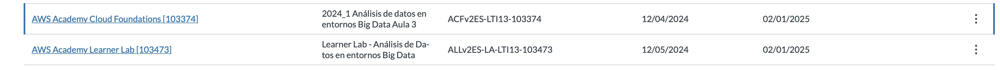
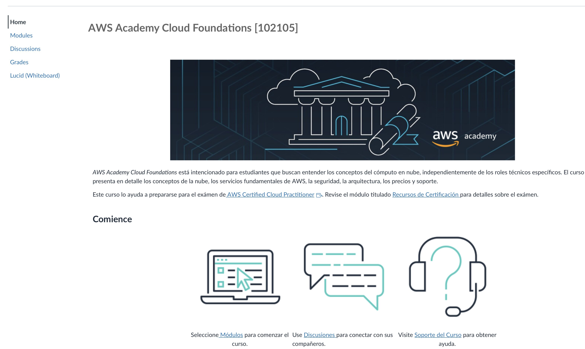
En el cas del Learner Lab,
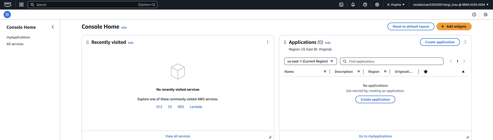
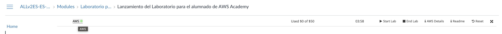
Puntuació de l'activitat:¶
- Exercici 1: Descripció i justificació dels serveis d'AWS (2,5 punts)
- Exercici 2: Proves de processament de dades (3 punts)
- Exercici 3: Validació dels KPIs (2 punts)
- Exercici 4: Incorporació de scripts o codi rellevant (2,5 punts)
Exercici 1: Descripció i justificació dels serveis d'AWS (2,5 punts)¶
En aquest apartat expliqueu i justifiqueu els serveis d’AWS que heu seleccionat en el vostre projecte, tenint en compte els objectius del projecte i el tipus de dades amb què treballeu. Descriviu detalladament com es realitzarà el processament de les dades a AWS. Incloeu una explicació dels fluxos de treball, les transformacions de dades i com es gestionarà la integració entre els diferents serveis d’AWS. Assegureu-vos que la selecció dels serveis s’alinea amb les necessitats específiques. A ser possible es demana utilitzar les icones estàndard d’AWS per mostrar de forma visual la vostra proposta de tractament de dades.
Rúbrica d'Avaluació per a la Descripció i Justificació dels Serveis d'AWS, cada apartat 0,5 punts¶
| Categoria | Excel·lent (4) | Bo (3) | Satisfactori (2) | Necessita Millora (1) |
|---|---|---|---|---|
| Claredat i Precisió | La descripció i justificació dels serveis és molt clara i precisa. Tota la informació és fàcilment comprensible. | La descripció és clara i precisa, amb pocs errors de comprensió. | La descripció és generalment clara, però té alguns errors o omissions menors. | La descripció és confusa i conté molts errors que dificulten la comprensió. |
| Justificació dels Serveis d’AWS Seleccionats | La justificació dels serveis seleccionats està ben argumentada i alineada amb els objectius del projecte i el tipus de dades. | La justificació està ben argumentada però falta alguna alineació clara amb els objectius o dades. | La justificació és bàsica i no està alineada amb els objectius o dades. | La justificació no està argumentada ni alineada amb els objectius del projecte ni el tipus de dades. |
| Descripció del Processament de Dades | La descripció del processament de les dades és detallada i cobreix tots els aspectes importants, inclosos els fluxos de treball i les transformacions. | La descripció és detallada però pot faltar alguna informació específica. | La descripció cobreix els aspectes bàsics però manquen detalls importants. | La descripció és inadequada i no cobreix els aspectes importants del processament de dades. |
| Integració entre Serveis d’AWS | La integració entre els serveis està ben explicada i és coherent. Tots els serveis s'integren de manera eficient. | La integració està ben explicada, però podria millorar en coherència. | La integració està descrita de manera bàsica però manquen detalls i coherència. | La integració no està ben explicada i els serveis no s'integren de manera efectiva. |
| Presentació Visual amb Icones AWS | Les icones estàndard d’AWS estan ben utilitzades i la proposta és visualment clara i ben estructurada. | Les icones estan utilitzades però la claredat visual pot millorar. | Les icones estan poc utilitzades o mal col·locades, cosa que redueix la claredat visual. | Les icones no estan utilitzades i la proposta és confusa visualment. |
|Adjunta l'explicació aquí. Les explicacions són captures de pantalla, del que demostrareu en la entrevista de l'activitat
1.1. Introducció del projecte¶
El projecte consisteix en dissenyar i implementar una pipeline de dades a AWS per processar les vendes diàries d’una cadena de botigues de roba repartides per diferents ciutats de Catalunya. Les dades utilitzades són sintètiques i han estat generades específicament per simular un escenari realista de vendes per botiga i dia.
Cada botiga genera un fitxer CSV diari amb les vendes realitzades durant la jornada. Cada fitxer conté informació de les vendes realitzades en una botiga concreta, com l’identificador de la botiga, la data, l’hora de la venda, el producte venut, el departament, la talla, el preu, les unitats venudes, el color i la descripció del producte.
L’objectiu del projecte és emmagatzemar aquests fitxers a AWS, validar-ne l’estructura, processar les dades i carregar-les en una base de dades relacional perquè quedin preparades per a l’anàlisi. Com a resultat final, les transaccions quedaran emmagatzemades en una base de dades Amazon Aurora compatible amb MySQL i en S3. Com a validació addicional, Amazon Athena permetrà consultar amb SQL els fitxers emmagatzemats a S3 i comparar-ne els resultats amb les dades carregades a la base de dades.
La pipeline s’inicia quan es puja un fitxer CSV a la carpeta entrada/ del bucket S3. Aquesta pujada activa una funció Lambda que valida el fitxer i el mou a validat/ o error/. Quan un fitxer queda a validat/, S3 envia un missatge a una cua SQS, que activa una segona funció Lambda encarregada de processar el fitxer i carregar les dades a RDS.
La figura següent mostra l’arquitectura general proposada per a la pipeline:
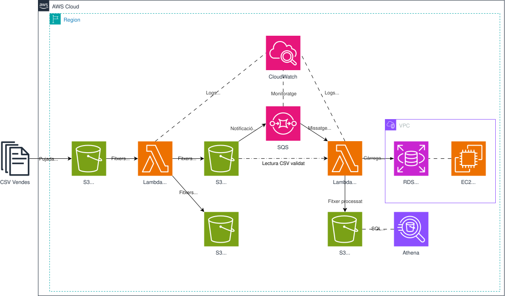
El flux principal cobreix el procés ETL (Extracció, Transformació i Càrrega) de les dades. La pipeline és escalable i permet processar múltiples fitxers de manera concurrent, gràcies a la combinació de S3, Lambda i SQS.
1.2. Tipus de dades utilitzades¶
Les dades utilitzades representen vendes de productes de roba. Per una banda, es disposa d’un fitxer productes.csv, que conté el catàleg de productes disponibles. Per altra banda, cada botiga genera un fitxer CSV de vendes amb les operacions realitzades durant un dia concret.
El fitxer productes.csv té els següents camps:
id_producte
departament
descripcio
preu
El camp id_producte és l’identificador únic del producte i correspon a una cadena alfanumèrica. El camp departament indica la categoria del producte, com home, dona, nen o nena. El camp descripcio conté una breu descripció del producte i el camp preu indica el preu unitari.
Cadascun dels fitxers de vendes té els següents camps:
id_botiga
data
hora
id_producte
departament
talla
preu
unitats
color
descripcio
1.3. Serveis AWS seleccionats¶
Els serveis seleccionats són:
| Servei AWS | Funció dins del projecte |
|---|---|
| Amazon S3 | Emmagatzema els fitxers CSV d’entrada, els fitxers validats, els fitxers amb error i els fitxers processats. |
| AWS Lambda - validació | Valida els fitxers CSV que arriben a entrada/ i els mou a validat/ o error/. |
| Amazon CloudWatch | Registra els logs de les funcions Lambda i permet revisar execucions i errors. |
| Amazon SQS | Canalitza els missatges associats als fitxers validats cap a la fase de processament. |
| AWS Lambda - processament | Llegeix els missatges de SQS, processa el CSV validat, carrega les dades a RDS i mou el fitxer a processat/. |
| Amazon Aurora (compatible amb MySQL) | Emmagatzema les taules productes i vendes. |
| Amazon EC2 | S’utilitza per crear taules, carregar productes.csv i fer consultes SQL. |
| Amazon Athena | Permet fer consultes SQL sobre els fitxers emmagatzemats a la carpeta processat/ del bucket S3. |
| Amazon VPC | Proporciona la xarxa aïllada on es despleguen i es comuniquen la Lambda de processament, EC2 i RDS. |
Cada servei té una responsabilitat clara dins de la pipeline. S3 actua com a repositori de fitxers, Lambda automatitza la validació i el processament, SQS desacobla les fases de la pipeline, RDS proporciona una base de dades relacional per emmagatzemar les dades estructurades i Athena permet fer comprovacions addicionals sobre els fitxers processats.
1.4. Justificació dels serveis AWS¶
1.4.1 Amazon S3¶
Amazon S3 s’utilitza com a sistema principal d’emmagatzematge de fitxers. Dins del bucket es creen diferents carpetes lògiques per separar les fases del procés:
entrada/
validat/
error/
processat/
La carpeta entrada/ conté els fitxers CSV originals pujats al sistema. La carpeta validat/ conté els fitxers que han superat la validació inicial feta amb Lambda. La carpeta error/ conté els fitxers rebutjats o que no compleixen l’estructura esperada. Finalment, la carpeta processat/ conté els fitxers que ja han estat processats. Com a proposta futura, els fitxers de processat/ es conservarien durant dos anys i després es traslladarien a S3 Glacier mitjançant una política de cicle de vida.
S3 és adequat perquè és un servei gestionat, escalable i molt utilitzat com a repositori de dades. També permet mantenir la traçabilitat del procés, ja que es poden conservar separadament els fitxers originals, els validats, els erronis i els processats.
1.4.2 AWS Lambda¶
AWS Lambda s’utilitza en dues parts diferents de la pipeline.
La primera funció Lambda s’encarrega de validar els fitxers CSV que arriben a la carpeta entrada/ del bucket S3. Aquesta funció llegeix el fitxer CSV, comprova que la capçalera tingui l’estructura esperada i valida els registres abans de permetre que continuïn dins de la pipeline. Si el fitxer és correcte, el mou a validat/; si detecta algun error, el mou a error/.
La segona funció Lambda s’encarrega del processament posterior. Aquesta funció s’activa a partir dels missatges de SQS, llegeix el fitxer validat, processa el contingut del CSV i carrega les dades a la base de dades RDS.
Lambda és adequada perquè és un servei serverless basat en esdeveniments. Permet executar codi només quan cal, sense mantenir una màquina encesa permanentment per validar o processar fitxers.
1.4.3 Amazon CloudWatch¶
Amazon CloudWatch s’utilitza per consultar els logs generats per les funcions Lambda durant la validació i el processament dels fitxers. Això permet veure quan s’ha executat cada funció, quin fitxer s'ha processat, si el procés ha estat correcte o si s’ha produït algun error.
1.4.4 Amazon SQS¶
Amazon SQS s’utilitza per desacoblar la fase de validació de la fase de processament. Quan un fitxer és validat i queda a la carpeta validat/, S3 envia un missatge a una cua SQS amb la informació del fitxer.
Aquesta cua permet que la segona funció Lambda processi els fitxers validats de manera desacoblada i controlada. D’aquesta manera, la validació i la càrrega a RDS no depenen directament l’una de l’altra, i la pipeline és més robusta davant errors puntuals.
SQS també facilita el control dels fitxers pendents de processar. Quan la Lambda de processament acaba correctament, SQS elimina el missatge associat de la cua.
1.4.5 Amazon EC2¶
Amazon EC2 s’utilitza per a tasques d’administració i proves. Des d’aquesta instància es pot connectar a RDS, crear les taules de la base de dades, carregar el fitxer productes.csv i executar consultes SQL per verificar que les dades s’han carregat correctament. EC2 també s’utilitza per generar la capa de Lambda amb les dependències necessàries per connectar-se a RDS.
EC2 també serveix com a entorn de suport per preparar fitxers, executar comandes de prova i validar la connexió amb la base de dades. No és el component principal de processament de la pipeline, ja que aquesta part queda automatitzada amb Lambda.
1.4.6 Amazon RDS¶
Amazon RDS s’utilitza com a base de dades relacional final. En aquest projecte s’utilitza MySQL. Les dades netes generades durant el processament es carreguen en dues taules principals:
productes
vendes
La taula productes conté la informació dels productes, com l’identificador, el departament, la descripció i el preu. La taula vendes conté les vendes processades, com la botiga, el producte, la data, l’hora i la quantitat venuda. La relació entre les dues taules es fa mitjançant el camp id_producte.
RDS permet fer consultes SQL per obtenir indicadors com el nombre total de vendes, les unitats venudes, les vendes per botiga, les vendes per producte o les vendes per departament combinant la informació de vendes i productes.
RDS és adequat perquè les dades finals són estructurades i tabulars, i perquè MySQL permet consultar-les de manera senzilla i coneguda.
1.4.7 Amazon Athena¶
Amazon Athena s’utilitza com a servei addicional d’anàlisi. No substitueix RDS, sinó que serveix per validar i fer consultes exploratòries directament sobre els fitxers processats de S3.
Això permet comprovar que el fitxer processat de S3 és coherent amb les dades carregades a RDS. Per exemple, es pot comparar el nombre de registres consultat amb Athena sobre processat/ amb el nombre de files carregades a la taula vendes de RDS.
Athena s’ha triat perquè és serverless, fàcil de provar, s’integra bé amb S3 i permet afegir una capa d’anàlisi sense complicar l’arquitectura.
1.4.8 Amazon VPC¶
La part de xarxa es gestiona amb Amazon VP i es distribueix en dues zones de disponibilitat i inclou subxarxes públiques i privades. RDS i EC2 es despleguen dins la mateixa VPC, en una configuració que permeti la comunicació entre ells. També és necessari que la Lambda de processament pugui connectar-se a RDS per carregar-hi les dades.
La idea és que RDS no estigui obert innecessàriament a internet i que només els components autoritzats puguin accedir-hi. Com que s’utilitza MySQL, RDS escolta habitualment pel port 3306.
A més, utilitzem un VPC Endpoint per a S3 per evitar que les comunicacions entre Lambda i S3 passin per internet públic. Això millora la seguretat i manté el trànsit dins la xarxa d’AWS.
1.5. Processament de dades i integració entre serveis¶
El processament de dades segueix un esquema ETL: extracció, transformació i càrrega.
A nivell d’integració, el flux és el següent: els fitxers CSV es carreguen a S3 entrada/; una primera Lambda valida el fitxer i el mou a validat/ o error/; quan el fitxer queda a validat/, S3 envia a SQS un missatge amb la informació necessària perquè la Lambda de processament recuperi el fitxer des de validat/; la segona Lambda consumeix el missatge, processa el CSV i carrega les dades a RDS MySQL; un cop finalitza correctament el processament, el fitxer es mou a S3 processat/. CloudWatch registra els logs de les funcions Lambda i Athena permet consultar els fitxers processats guardats a S3.
1.5.1 Extracció¶
La fase d’extracció comença quan els fitxers CSV de vendes arriben a Amazon S3, dins la carpeta entrada/.
Cada fitxer representa les vendes d’una botiga en una data concreta. Aquesta fase no modifica les dades, sinó que les deixa disponibles en el repositori inicial.
1.5.2 Validació inicial¶
Quan es puja un fitxer CSV a S3 entrada/, la primera funció Lambda s’activa mitjançant un esdeveniment de S3. La funció llegeix el fitxer, comprova que la capçalera tingui l’estructura esperada i valida els registres abans de permetre que continuïn dins de la pipeline.
Si el fitxer supera la validació, es mou a validat/; si es detecta algun error, es mou a error/. El resultat de l’execució i els possibles errors queden registrats a CloudWatch.
Quan un fitxer arriba a validat/, S3 envia a SQS un missatge amb la informació necessària perquè la Lambda de processament recuperi el fitxer des de validat/.
1.5.3 Processament¶
La transformació i càrrega principal es fa amb una segona funció Lambda, activada pels missatges de SQS. Aquesta funció consumeix el missatge, recupera el fitxer validat des de S3 i interpreta el contingut del CSV.
Les operacions principals consisteixen a convertir els camps data, hora i unitats als tipus adequats i preparar la inserció de les dades a la taula vendes. Durant la càrrega, el camp unitats del CSV s’insereix al camp quantitat de la taula vendes.
La relació amb la taula productes es controla mitjançant el camp id_producte i la clau forana definida a RDS, que impedeix inserir vendes associades a productes inexistents.
1.5.4 Càrrega¶
La Lambda de processament carrega les dades a RDS compatible amb MySQL. Quan la càrrega finalitza correctament, mou el fitxer des de S3 validat/ fins a processat/.
La càrrega a RDS permet conservar les dades en format relacional i consultar-les posteriorment amb SQL. Després d’una execució correcta de la Lambda, SQS elimina automàticament el missatge associat de la cua.
No s’implementa en aquesta pràctica, però es preveu conservar els fitxers de processat/ durant dos anys abans d’arxivar-los a S3 Glacier.
1.5.5 Consulta i verificació a RDS¶
Un cop les dades estan carregades a RDS, es poden executar consultes SQL des de la instància EC2 per comprovar que la càrrega s’ha fet correctament i obtenir indicadors bàsics.
Per exemple:
SELECT COUNT(*) AS total_vendes
FROM vendes;
SELECT *
FROM vendes
ORDER BY data DESC, hora DESC
LIMIT 5;
Aquestes consultes permeten verificar el nombre de registres inserits, revisar les vendes més recents i comprovar que les dades queden disponibles per a l’anàlisi posterior.
1.5.6 Validació addicional amb Athena¶
Athena consulta directament els fitxers de S3 processat/. Per fer-ho, es crea una taula externa que apunta a aquesta ubicació i interpreta els CSV processats com una única taula consultable amb SQL.
Per exemple, es pot executar una consulta de recompte:
SELECT COUNT(*) AS total_vendes_processades
FROM vendes_processades;
També es poden fer consultes agregades, com el total d’unitats venudes per producte o l’import total de les vendes:
SELECT id_producte, SUM(unitats) AS total_unitats
FROM vendes_processades
GROUP BY id_producte
ORDER BY total_unitats DESC;
SELECT SUM(preu * unitats) AS import_total
FROM vendes_processades;
Exercici 2: Proves de processament de dades (3 punts)¶
Realitzeu un conjunt de proves per assegurar-vos que les dades s’estan processant correctament. Descriviu els passos seguits per verificar la precisió i la consistència del processament de dades. En aquest apartat heu de fer servir els de persistència de dades (EBS i/o S3), una màquina EC2, alguna de les bases d'Amazon (RDS) i l'ús de Lambda. A més caldrà utilitzar algun servei addicional dels que ofereix Amazon i que teniu accés en el Learner Lab.
Rúbrica d'Avaluació per a la Verificació del Processament de Dades, cada apartat val 0,5 punts¶
| Ítem | Excel·lent (4) | Bo (3) | Satisfactori (2) | Necessita Millora (1) |
|---|---|---|---|---|
| Descripció dels Passos Seguits | La descripció dels passos seguits és molt clara, detallada i fàcilment comprensible. | La descripció és clara i detallada amb pocs errors de comprensió. | La descripció és generalment clara, però pot tenir alguns errors o omissions menors. | La descripció és confusa i conté molts errors que dificulten la comprensió. |
| Precisió i Consistència de les Dades | Les proves demostren una precisió i consistència excel·lent del processament de dades amb resultats fiables i consistents. | Les proves demostren una precisió i consistència bones amb pocs errors. | Les proves demostren una precisió i consistència acceptables però amb alguns errors. | Les proves demostren una manca de precisió i consistència significativa en el processament de dades. |
Ús dels Serveis d'Infraestructura i Emmagatzematge | L'ús dels serveis d'infraestructura i emmagatzematge d'AWS està ben justificat i s'utilitzen de manera eficient per al processament de dades. | L'ús dels serveis està ben justificat però pot faltar una mica d'eficiència en la configuració d'EBS/S3 o EC2. | L'ús dels serveis és acceptable però no totalment eficient o justificat en la selecció d'infraestructura. | L'ús dels serveis és inadequat o no es justifica correctament. |
| Programació amb Lambda i Gestió de Bases de Dades | La programació amb Lambda i la gestió de RDS està ben implementada, és eficient i segueix les millors pràctiques per al processament de dades. | La implementació està ben feta però pot faltar una mica d'eficiència en el codi Lambda o en la configuració de RDS. | La implementació és acceptable però no totalment eficient o justificada en la programació i gestió de bases de dades. | La implementació és inadequada o no es justifica correctament el codi i la gestió de bases de dades. |
| Integració entre Serveis d’AWS | La integració entre els serveis d'AWS és excel·lent, amb fluxos de treball ben definits. | La integració és bona però podria ser més eficient. | La integració és acceptable però pot tenir algunes mancances. | La integració és inadequada i no es completen els fluxos de treball correctament. |
| Presentació Visual amb Icones AWS | Les icones estàndard d’AWS estan ben utilitzades i la proposta és visualment clara i ben estructurada. | Les icones estan utilitzades però la claredat visual pot millorar. | Les icones estan poc utilitzades o mal col·locades, cosa que redueix la claredat visual. | Les icones no estan utilitzades i la proposta és confusa visualment. |
Adjunteu l'explicació aquí. Les explicacions són captures de pantalla, del que demostrareu en la entrevista de l'activitat.
Validació de fitxers CSV d'entrada (S3, Lambda, CloudWatch, IAM)¶
En aquesta part es configura el bucket de S3 i la funció Lambda que valida els fitxers d’entrada. La funció Lambda s’encarrega de validar els fitxers CSV que es pugen a la carpeta entrada/ del bucket de S3, i mou els fitxers vàlids a la carpeta validat/ i els fitxers amb errors a la carpeta error/. A més, es comprova que el desencadenador de S3 està funcionant correctament i que els logs de CloudWatch mostren la informació esperada.
- Crear un bucket a S3 per a emmagatzemar els fitxers d'entrada, els fitxers validats i els fitxers amb errors.
- Obrir AWS Management Console i busca el servei S3 des del cercador de serveis.
- Si no s'ha creat cap bucket anteriorment, clicar al botó Create Bucket. Altrament, entrar a Buckets i crear el bucket del projecte, amb un nom únic (
amzn-s3-uoc-2026-bucket) i la regió del laboratori. - Crear les carpetes
entrada/,validat/ierror/a l'interior del bucket mitjançant el botó Crear carpeta.
- En AWS Academy, no es poden crear rols personalitzats, utilitzem el rol
LabRole. En un entorn AWS normal, cal crear un rol d'execució per a Lambda amb el nomCsvValidationRolei assignar-li les polítiques gestionadesAWSLambdaBasicExecutionRoleiAmazonS3FullAccess:- Anar al cercador de serveis i obrir IAM.
- En el plafó lateral de l'esquerra, clicar a Roles i després a Crear rol.
- En la primera pantalla, seleccionar Servicio de AWS service i després Lambda com a cas d'ús.
- En la següent pantalla, buscar i seleccionar les polítiques gestionades
AWSLambdaBasicExecutionRoleiAmazonS3FullAccess. - En l'última pantalla de Asignar nombre, revisar y crear, afegir l'etiqueta
Nameamb el valorRol validació fitxers CSV. Clicar a Crear rol.
- Crear la funció Lambda que s'encarregarà de validar els fitxers CSV d'entrada:
- Anar al cercador de serveis i obrir Lambda.
- Crear la funció amb Crear función i seleccionar Crear desde cero, proporcionar un nom (
ValidarFitxersCsv), triar python com entorn d'execució. - Desplegar la configuració personalitzada, habilitar Rol de ejecución personalizada i seleccionar el rol d'execució
LabRole(en un entorn AWS normal utilitzaríem el rol creat amb IAM). - A la pestanya Configuration, anar a Agregar desencadenadores:
- Triar S3 com a desencadenador.
- Seleccionar el bucket creat anteriorment i el prefix
entrada/. - Deixar les opcions per defecte i clicar a Agregar.
- Provar la funció Lambda i el desencadenador de S3:
- Des de S3 pugem un fitxer CSV de prova a
entrada/mitjançant el botó Cargar. - Des de Lambda, anar a la pestanya Monitorear, clicar al botó Ver registros de CloudWatch a CloudWatch Logs.
- Des de CloudWatch, revisar els logs de la funció Lambda per veure que el fitxer s’ha validat i que s’ha mogut a
validat/oerror/segons correspongui. - Des de S3, verificar al bucket que els CSV vàlids queden a
validat/i els erronis aerror/.
- Des de S3 pugem un fitxer CSV de prova a
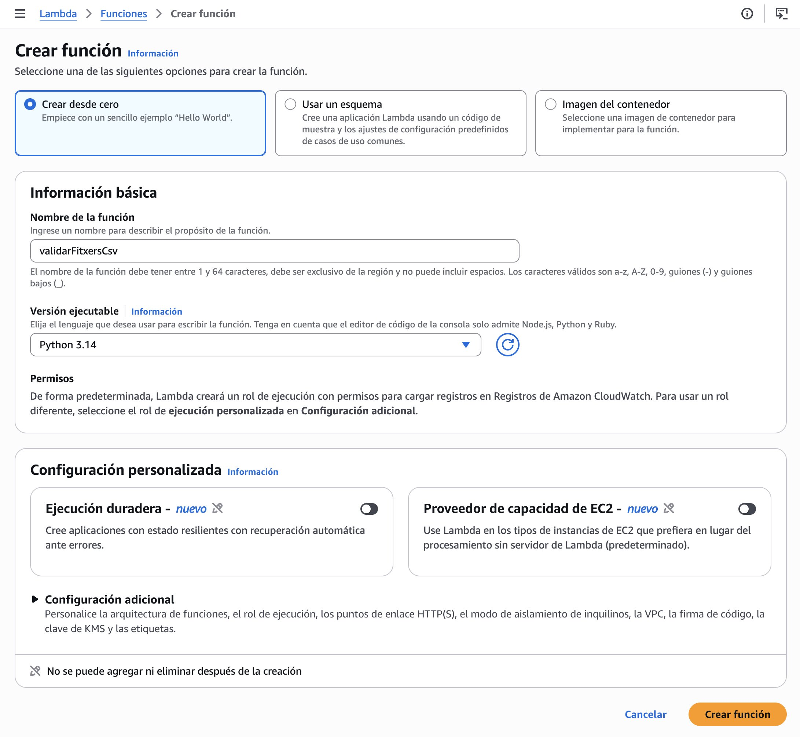
Figura 1. Creació de la funció Lambda.
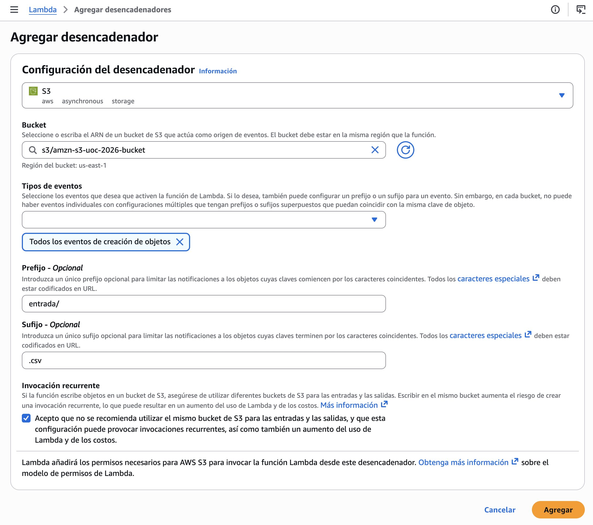
Figura 2. Configuració del desencadenador.
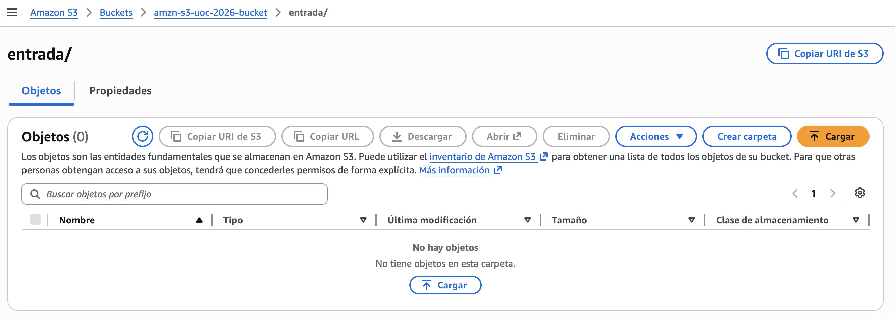
Figura 3. Carpeta entrada al S3 després de l'activació del desencadenador.
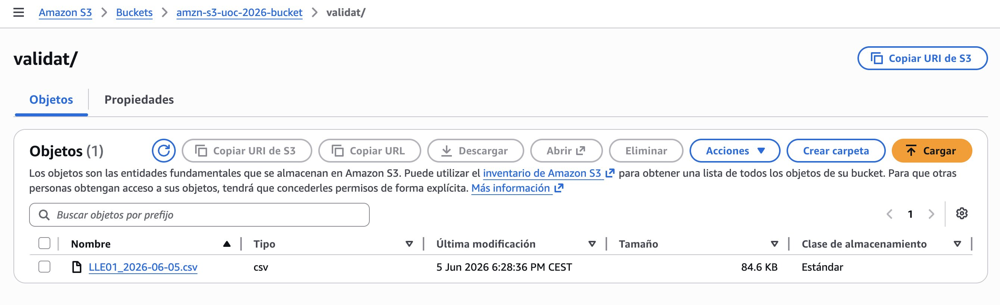
Figura 4. Carpeta validat al S3 després de l'activació del desencadenador.
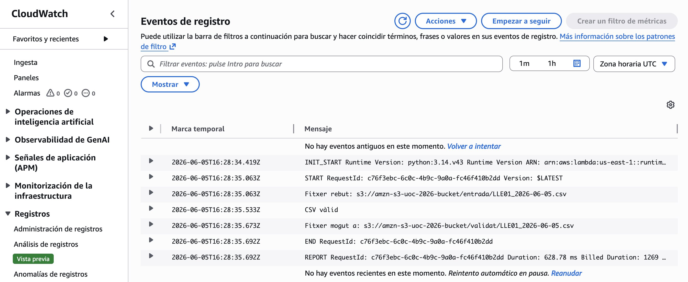
Figura 5. Registres de CloudWatch.
Fins aquest punt, les crides de la funció lambda al servei S3 es fan a través d'internet públic. Per a millorar la seguretat, es pot configurar un endpoint de VPC per a S3, que permet que les comunicacions entre Lambda i S3 es facin a través de la xarxa privada d'AWS en lloc d'internet públic. Això es fa des de la consola de VPC, creant un endpoint per a S3 i associant-lo amb la VPC on està desplegada la funció Lambda. Un cop configurat l'endpoint, les crides de Lambda a S3 es redirigiran automàticament a través de l'endpoint, millorant la seguretat i el rendiment de les comunicacions entre els serveis.
Posteriorment configurarem la replicació de la base de dades RDS amb dos zones de disponibilitat, per aquest motiu, cal configurar la VPC amb dues zones de disponibilitat i associar la funció Lambda a aquesta VPC per a que les comunicacions entre Lambda i S3 es facin a través de la xarxa privada d'AWS.
- Crear una VPC amb dues zones de disponibilitat:
- Anar al cercador de serveis i obrir VPC.
- Clicar a Crear VPC i seleccionar VPC y más.
- Marcar la casella Generar automáticamente.
- Proporcionar un nom per a la VPC (
botigues) i un bloc CIDR (per exemple,10.0.0.0/16). - Selecciona 2 zones de disponibilitat
- Seleccionar 2 subxarxes públiques (per exemple,
10.0.1.0/24i10.0.3.0/24). - Seleccionar 2 subxarxes privades (per exemple,
10.0.2.0/24i10.0.4.0/24). - Expandir la secció Personalizar bloques de CIDR de subredes i configurar les següents opcions:
- Bloque de CIDR de la subred pública 1 en us-east-1a:
10.0.1.0/24 - Bloque de CIDR de la subred pública 2 en us-east-1b:
10.0.3.0/24 - Bloque de CIDR de la subred privada 1 en us-east-1a:
10.0.2.0/24 - Bloque de CIDR de la subred privada 2 en us-east-1b:
10.0.4.0/24
- Bloque de CIDR de la subred pública 1 en us-east-1a:
- Seleccionar la porta d'enllaç Zonal i seleccionar En 1 AZ.
- Puntos de enlace de la VPC marcar la casella Habilitar el punto de enlace de la VPC para S3.
- Clicar a Crear VPC.
- Per comprovar que la VPC conté el punt de connexió a S3, anar a la secció Puntos de conexión (Endpoints) de la consola de VPC i verificar que hi ha un endpoint per al servei S3.
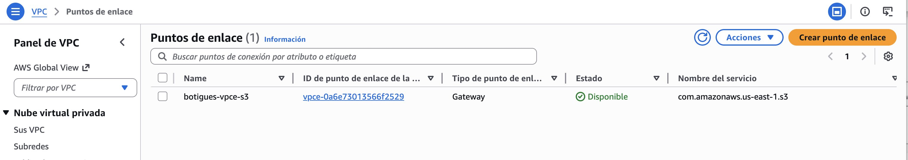
Figura 7. Endpoint de VPC per a S3.
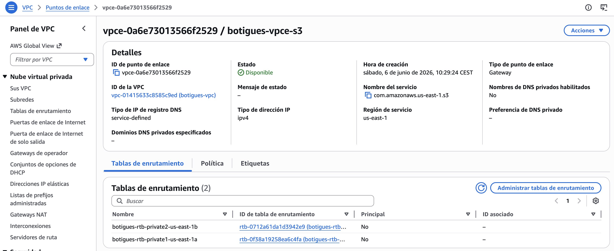
Figura 8. Detall de l'endpoint de VPC per a S3.
- Configurar la funció lambda perquè utilitzi la VPC creada:
- Anar al cercador de serveis i obrir Lambda.
- Seleccionar la funció Lambda creada anteriorment (
ValidarFitxersCsv). - Anar a la pestanya Configuració i clicar a VPC.
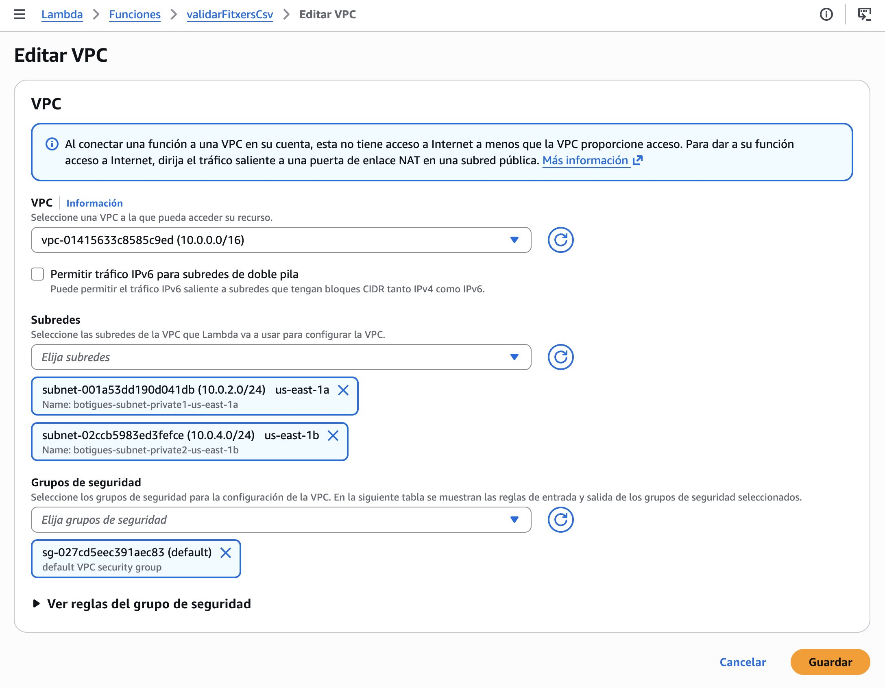
Figura 9. Configuració de la VPC a la funció Lambda.
- Verificar que les comunicacions entre Lambda i S3 es fan a través del endpoint de VPC:
- Des de Lambda, anar a la pestanya Monitorear, clicar al botó Ver registros de CloudWatch a CloudWatch Logs.
- Des de CloudWatch, revisar els logs de la funció Lambda per veure que les crides a S3 son redirigides a través de l'endpoint de VPC, indicant que les comunicacions entre Lambda i S3 es fan a través de la xarxa privada d'AWS en lloc d'internet públic.
Carregar fitxers CSV validats a base de dades (S3, Lambda, CloudWatch, IAM, RDS, EC2, SQS)¶
En aquesta part s'utilitza una cua de SQS per a gestionar els fitxers CSV que han estat validats per carregar-los a una base de dades RDS. Els missatges de la cua s'utilitzen per a coordinar el processament i la inserció de dades. Quan un fitxer és validat i mogut a validat/, S3 envia un missatge a la cua de SQS amb la informació del fitxer. Una funció Lambda està configurada per a llegir els missatges de la cua, carregar les dades del fitxer CSV a una base de dades RDS i eliminar el missatge de la cua un cop processat. A més, es comprova que el desencadenador de SQS està funcionant correctament i que els logs de CloudWatch mostren la informació esperada.
Crear una cua de SQS per a gestionar els fitxers CSV validats:
- Anar al cercador de serveis i obrir SQS.
- Clicar a Crear cola i seleccionar Cola estàndard.
- Proporcionar un nom per a la cua (
validatedCsvQueue) i deixar les opcions per defecte. Clicar a Crear cola.
Per afegir els permisos necessaris a S3 per a publicar missatges a la cua de SQS, cal modificar la política d'accés de la cua de SQS per a permetre que S3 publiqui missatges. En un entorn AWS normal, es faria així:
- Anar a la cua de SQS creada anteriorment i clicar a la pestanya Permisos.
- Clicar a Editar política de acceso
- Clicar a Generador de políticas
- En el pas 1, seleccionar el tipus de política SQS Queue Policy.
- En el pas 2, seleccionar Allow com a efecte, i en Principal introduir
s3.amazonaws.com. En Action, seleccionar SendMessage. En Amazon Resource Name (ARN), introduir l'ARN de la cua de SQS (arn:aws:sqs:us-east-1:707787736069:validatedCsvQueue) i clicar a Add Statement. - En el pas 3, seleccionar SendMessage com a acció.
- Clicar a Generar política i després a Apply Policy. Anteriorment, la política d'accés de la cua de SQS era aquesta:
{
"Version": "2012-10-17",
"Id": "__default_policy_ID",
"Statement": [
{
"Sid": "__owner_statement",
"Effect": "Allow",
"Principal": {
"AWS": "arn:aws:iam::707787736069:root"
},
"Action": "SQS:*",
"Resource": "arn:aws:sqs:us-east-1:707787736069:validatedCsvQueue"
}
]
}
per aquest contingut:
{
"Version": "2012-10-17",
"Id": "__default_policy_ID",
"Statement": [
{
"Sid": "__owner_statement",
"Effect": "Allow",
"Principal": {
"AWS": "arn:aws:iam::707787736069:root"
},
"Action": "SQS:*",
"Resource": "arn:aws:sqs:us-east-1:707787736069:validatedCsvQueue"
},
{
"Sid": "__allow_s3_publish",
"Effect": "Allow",
"Principal": {
"Service": "s3.amazonaws.com"
},
"Action": "SQS:SendMessage",
"Resource": "arn:aws:sqs:us-east-1:707787736069:validatedCsvQueue"
}
]
}
Configurar S3 per a enviar un missatge a la cua de SQS quan un fitxer és mogut a
validat/:- Anar al bucket de S3 creat anteriorment i clicar a la pestanya Propiedades.
- Desplaçar-se fins a Notificaciones de eventos i clicar a Todos los eventos de creación de objetos.
- Proporcionar un nom per a la notificació (
Notificació fitxers validats), seleccionar el prefixvalidat/i introduir el sufix.csv. - En Tipo de evento, seleccionar All object create events.
- En Destino, seleccionar Cola de SQS i seleccionar la cua creada anteriorment (
validatedCsvQueue). - Clicar a Guardar cambios.
Abans de crear la base de dades, hem de crear un grup de subxarxes de base de dades (DB subnet group) per a RDS, que és necessari per a desplegar la base de dades en una VPC. El grup de subxarxes defineix les subxarxes de la VPC on es poden desplegar les instàncies de base de dades. En aquest cas, seleccionarem les subxarxes privades creades anteriorment per a garantir que les instàncies de RDS no siguin accessibles des d'internet públic.
- Anar al cercador de serveis i obrir RDS.
- En el menú lateral, clicar a Grupos de subredes i després a Crear grupo de subredes.
- Proporcionar un nom per al grup de subxarxes (
subxarxes-botigues), en la descripció escriure una breu descripció (Grup de subxarxes per a la base de dades de botigues) i seleccionar la VPC creada anteriorment (botigues-vpc). - Seleccionar les zones de disponibilitat associades a les subxarxes creades anteriorment.
- Seleccionar les dues subxarxes privades.
Crear base de dades RDS per a emmagatzemar les dades dels fitxers CSV. (veure restriccions al final d'aquest apartat)
- Anar al cercador de serveis i obrir RDS.
- Clicar a Crear base de datos.
- Seleccionar el motor de base de dades Aurora (MySQL Compatible), Configuración completa i la plantilla Desarrollo y pruebas.
- En la secció Tipo de escalabilidad de clúster, seleccionar Aprovisionada, en Tipo de configuración aprovisionada seleccionar Clases ampliables (incluye clases t) i db.t3.small com a tipus d'instància.
- En la secció Configuración:
- Seleccionem l'última versió disponible d'Aurora MySQL.
- Establim el nom del clúster com
botigues - Establim les credencials d'administrador de la base de dades, amb nom d'usuari
admini contrasenyacontrasenya_segura$123(autoadministrat).
- En la secció Disponibilidad y durabilidad, seleccionar Crear un nodo de lectura o de réplica de Aurora en una zona de disponibilidad diferente (se recomienda para la disponibilidad escalada).
- En l'apartat Conectividad, seleccionar la VPC creada anteriorment (
botigues-vpc) i seleccione el grup de subxarxes creat anteriorment (subxarxes-botigues). - En la secció Supervisión:
- desmarquem Habilitar información sobre rendimiento.
- desmarquem Activar la monitorización mejorada
- Despleguem la configuració addicional:
- Establim el nom de la base de dades com
botigues.
- Establim el nom de la base de dades com
- Clicar a Crear base de datos.
Per inicialitzar la base de dades utilitzarem una instància d'EC2. Es pot utilitzar una màquina EC2 per a connectar-se a la base de dades RDS i executar les sentències SQL per a gestionar la base de dades, crear les taules i inserir les dades dels fitxers CSV. En un entorn AWS normal, es crearia una instància EC2 amb accés a la VPC on està desplegada la base de dades RDS, i es configuraria el grup de seguretat per a permetre el trànsit entrant al port 22 (SSH) des de qualsevol lloc.
- Anar al cercador de serveis i obrir EC2.
- Clicar a Lanzar la instancia, introduïm el nom de la instància (
instancia-botigues) i seleccionar una imatge d'Amazon Linux 2023 (que està dins del nivell gratuït). - Seleccionar el tipus d'instància t3.micro (que està dins del nivell gratuït).
- En el parell de claus, seleccionar vockey.
- En la secció Configuraciones de red, clicar a Editar:
- Seleccionar la VPC creada anteriorment per a que estigui en la mateixa VPC que la base de dades RDS (
botigues-vpc) i seleccionar la primera subxarxa pública. - Habilitar Asignar una dirección IP pública per a poder connectar-se a la instància EC2 mitjançant SSH.
- Crear un nou grup de seguretat amb el nom
grup-seguretat-instancia-botigues, en la descripcióGrup de seguretat de la instancia EC2 de les botigues, afegir una regla d'entrada per a permetre el trànsit SSH (port 22) des de qualsevol lloc. - Deixar les altres opcions per defecte.
- Seleccionar la VPC creada anteriorment per a que estigui en la mateixa VPC que la base de dades RDS (
- Llançar la instància clicant al botó Lanzar instancia.
- Mentre es crea la instancia, apareix un diàleg des d'on podem connectar l'ECS a un base de dades d'RDS, per a fer-ho cal clicar al botó Conectar una base de datos de RDS. En el següent diàleg cal seleccionar la base de dades RDS creada anteriorment (
botigues). - Esperar que estigui en estat En ejecución.
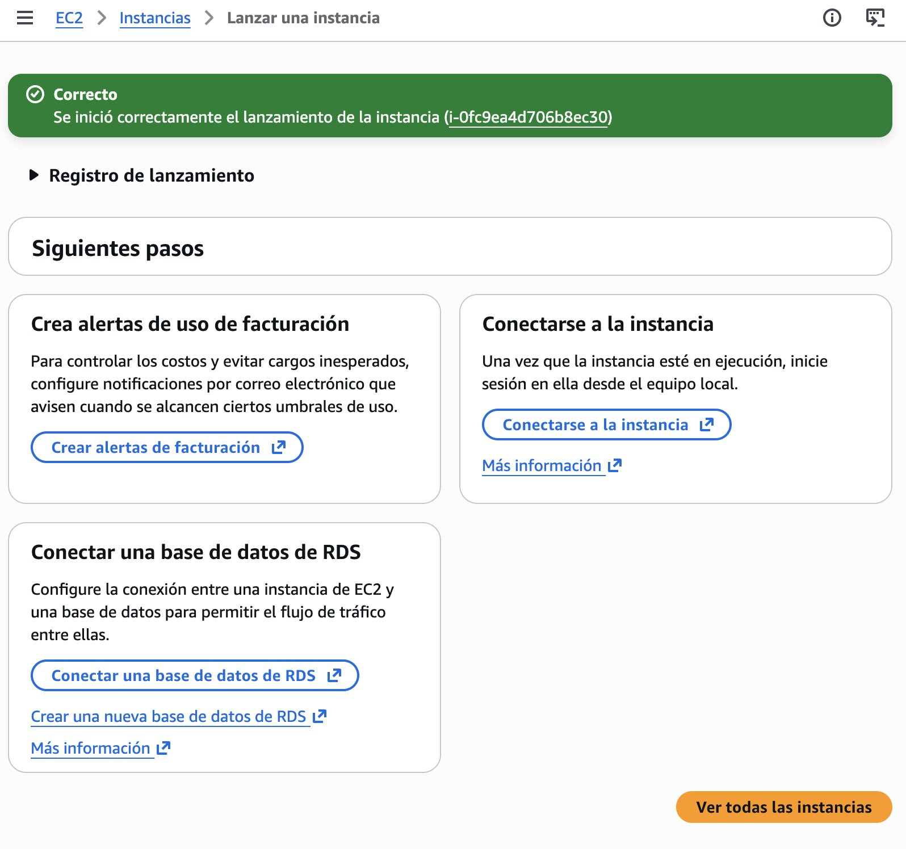
Figura 10. Després de llançar la instància EC2.
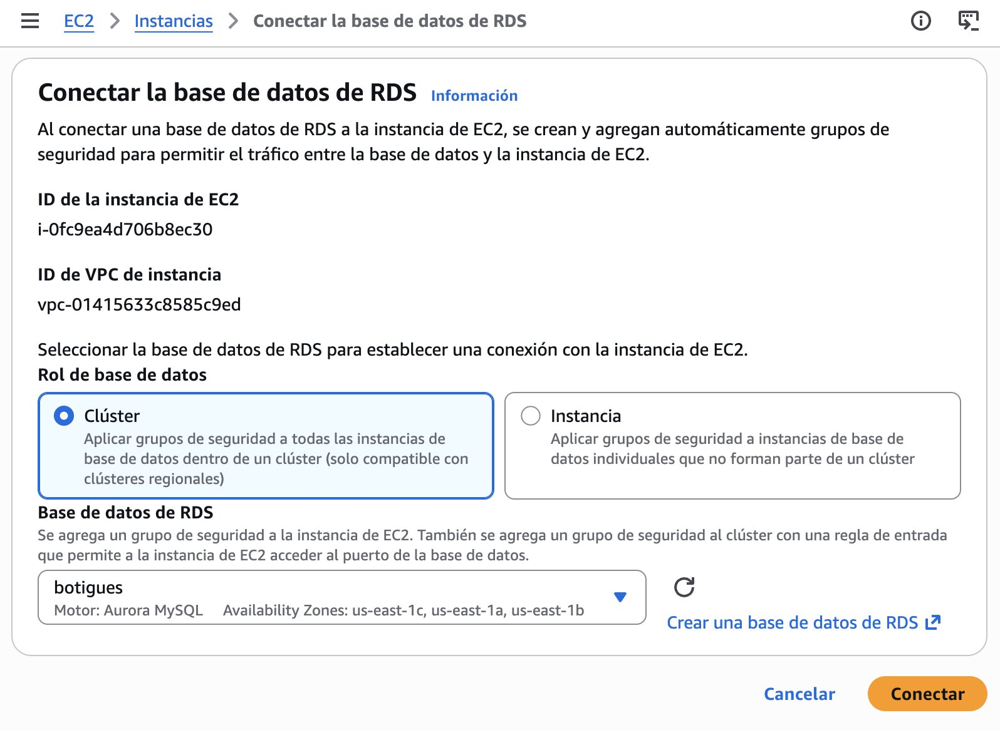
Figura 11. Connectar EC2 a RDS.
- Es pot accedir a la instància EC2 mitjançant SSH des del nostre host local sense introduir la contrasenya, utilitzant un nou parell de claus. Des d'AWS Management Console, podem connectar-nos a la instància d'EC2 i pujar la clau al fitxer
.ssh/authorized_keysde l'usuariec2-userper a permetre l'accés SSH. Un cop s'ha afegir la clau pública, podem connectar-nos a la instància EC2 mitjançant SSH utilitzant l'adreça IP pública de la instància EC2.- Generar un nou parell de claus (local):
ssh-keygen -t ed25519 -C "rbuj@ec2" -f ~/.ssh/id_ed25519-aws_academy
cat .ssh/id_ed25519-aws_academy.pub
ssh-ed25519 AAAAC3NzaC1lZDI1NTE5AAAAIOGp91P/k5Q0I0WTiPy/qzfpxcZiN7hRTG/9Ob1oBO8/ rbuj@ec2
- Copiar la clau pública al fitxer
authorized_keysde l'usuariec2-usera la instància EC2 (remot):
echo "ssh-ed25519 AAAAC3NzaC1lZDI1NTE5AAAAIOGp91P/k5Q0I0WTiPy/qzfpxcZiN7hRTG/9Ob1oBO8/ rbuj@ec2" >> ~/.ssh/authorized_keys
- Afegir la configuració d'EC2 al fitxer
~/.ssh/configper a facilitar la connexió. L'adreça IP pública de la instància EC2 és 3.238.160.96 (local):
Host uoc
Hostname eimtcld3.uoclabs.uoc.es
User rbuj
Port 55000
IdentityFile ~/.ssh/id_ed25519-uoc
IdentitiesOnly yes
Host ec2-botigues
HostName 3.238.160.96
User ec2-user
IdentityFile ~/.ssh/id_ed25519-aws_academy
IdentitiesOnly yes
- Ara podem iniciar la sessió amb la següent comanda:
ssh ec2-botigues
- Un cop la instància EC2 estigui en funcionament, es pot connectar mitjançant SSH i utilitzar el client MySQL per a connectar-se a la base de dades RDS i crear les taules necessàries per a emmagatzemar les dades dels fitxers CSV. Per connectar a la base de dades RDS, cal utilitzar les instruccions de connexió que es troben als detalls de la base de dades en la secció Pasos de conexión.
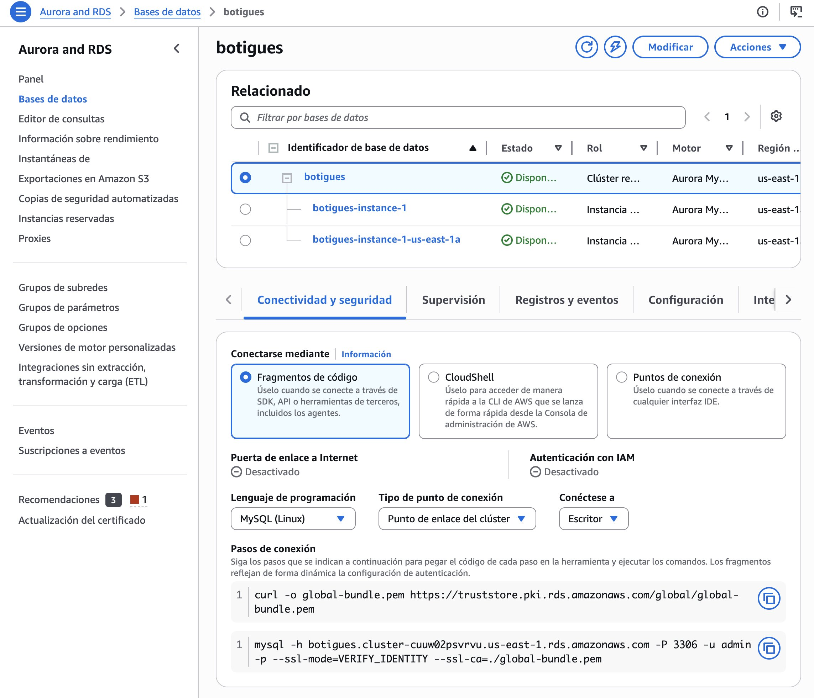
Figura 12. Instruccions de connexió a RDS.
- Un cop connectat a la instància EC2 mitjançant SSH, es pot utilitzar el client MySQL per crear les taules. Si no s'ha instal·lat el client MySQL a la instància EC2, es pot fer amb la següent comanda:
sudo dnf install mariadb105
- Per comprovar la versió i si està correctament instal·lat, es pot executar:
mysql --version
- Connectem amb el servidor de base de dades RDS utilitzant les instruccions de connexió proporcionades a la consola de RDS. Per exemple:
curl -o global-bundle.pem https://truststore.pki.rds.amazonaws.com/global/global-bundle.pem
mysql -h botigues.cluster-cuuw02psvrvu.us-east-1.rds.amazonaws.com -P 3306 -u admin -p --ssl-mode=VERIFY_IDENTITY --ssl-ca=./global-bundle.pem
- La versió del client MySQL no suporta el paràmetre
--ssl-mode=VERIFY_IDENTITY, per tant, cal eliminar aquest paràmetre de la comanda de connexió:
mysql -h botigues.cluster-cuuw02psvrvu.us-east-1.rds.amazonaws.com -P 3306 -u admin -p --ssl-ca=./global-bundle.pem --ssl
- Introduïm la contrasenya
contrasenya_segura$123quan se'ns demani. - Un cop connectat a la base de dades, es poden executar les sentències SQL per a crear les taules
productesivendesamb les següents estructures:
SHOW DATABASES;
USE botigues;
CREATE TABLE productes (
id_producte VARCHAR(20) PRIMARY KEY,
departament VARCHAR(255) NOT NULL,
descripcio VARCHAR(255) NOT NULL,
preu DECIMAL(10, 2) NOT NULL
);
CREATE TABLE vendes (
id_venda INT AUTO_INCREMENT PRIMARY KEY,
id_botiga VARCHAR(20) NOT NULL,
id_producte VARCHAR(20) NOT NULL,
quantitat INT NOT NULL,
data DATE NOT NULL,
hora TIME NOT NULL,
CONSTRAINT fk_vendes_productes
FOREIGN KEY (id_producte)
REFERENCES productes(id_producte)
);
LOAD DATA LOCAL INFILE './productes.csv'
INTO TABLE productes
FIELDS TERMINATED BY ','
ENCLOSED BY '"'
LINES TERMINATED BY '\n'
IGNORE 1 LINES
(id_producte, departament, descripcio, preu);
SELECT COUNT(*) AS total_productes FROM productes;
El fixer productes.csv es pot crear amb cat a la instància EC2:
cat <<EOF > productes.csv
id_producte,departament,descripcio,preu
8CHHA4XPBMO6,home,"Parka de teixit impermeable, amb un acabat d’alta qualitat i un toc casual.",115.75
...
EOF
O bé es pot pujar al bucket de S3 i després baixar-lo a la instància EC2 mitjançant la comanda aws s3 cp:
aws s3 cp s3://amzn-s3-uoc-2026-bucket/productes.csv .
En l'última opció es pot crear un rol d'IAM amb els permisos necessaris per a que la instància EC2 pugui accedir al bucket de S3 i associar aquest rol a la instància EC2. En un entorn AWS normal, es faria així:
- Anar al cercador de serveis i obrir IAM.
- En el plafó lateral de l'esquerra, clicar a Roles i després a Crear rol.
- En la primera pantalla, seleccionar Servicio de AWS service i després EC2 com a cas d'ús.
- En la següent pantalla, buscar i seleccionar la política gestionada
AmazonS3ReadOnlyAccessper a permetre que la instància EC2 pugui accedir al bucket de S3 i baixar els fitxers CSV, o si es volen pujar fitxers a S3, seleccionar la política gestionadaAmazonS3FullAccess. - En l'última pantalla de Asignar nombre, revisar y crear, afegir l'etiqueta
Nameamb el valorRolEc2AmbAccesS3. Clicar a Crear rol. - Anar al cercador de serveis i obrir EC2.
- Seleccionar la instància EC2 creada anteriorment (
instancia-botigues). - Anar a la pestanya Seguridad i clicar a Modificar rol de IAM.
- Seleccionar el rol creat anteriorment (
Rol EC2 amb accés S3) i clicar a Guardar cambios.
En AWS Academy, no es poden crear rols personalitzats, però podem utilitzar el rol LabInstanceProfile que ja té permisos per a accedir a S3, per tant, podem associar aquest rol a la instància EC2 per a que pugui accedir al bucket de S3 i baixar el fitxer CSV:
- Anar al cercador de serveis i obrir EC2.
- Seleccionar la instància EC2 creada anteriorment (
instancia-botigues). - Anar a la pestanya Seguridad i clicar a Modificar rol de IAM.
- Seleccionar el rol
LabInstanceProfilei clicar a Guardar cambios.
- Abans de crear la funció Lambda crearem una nova capa amb les biblioteques necessàries per a connectar-se a la base de dades RDS i carregar les dades dels fitxers CSV. En un entorn AWS normal, es crearia una capa de Lambda amb les biblioteques
pymysqlimysql-connector-pythonper a permetre que la funció Lambda es connecti a la base de dades RDS i carregui les dades dels fitxers CSV. La capa es pot crear en una instància EC2 i després pujar-la al bucket de S3 per a que es pugui utilitzar a la funció Lambda. Els passos per a crear la capa de Lambda són els següents:- Per utilitzar pip cal instal·lar el paquet
python3-pipa la instància EC2:
- Per utilitzar pip cal instal·lar el paquet
sudo dnf install python3-pip
- Crear un nou directori local per a la capa de Lambda:
mkdir lambda_layer
cd lambda_layer
- Crear un directori
pythondins del directori de la capa:
mkdir python
- Instal·lar les biblioteques
pymysqlimysql-connector-pythondins del directoripython:
pip install pymysql -t python/
pip install mysql-connector-python -t python/
- Comprimir el contingut del directori
pythonen un fitxer ZIP:
zip -r lambda_layer.zip python/
- Pujar el fitxer ZIP al bucket de S3 per a que es pugui utilitzar a la funció Lambda:
aws s3 cp lambda_layer.zip s3://amzn-s3-uoc-2026-bucket/lambda_layer.zip
- Anar al cercador de serveis i obrir Lambda.
- En el menú lateral, clicar a Capas i després a Crear una capa.
- Proporcionar un nom per a la capa (
RdsConnectionLayer), una descripció (Capa amb les biblioteques necessàries per a connectar-se a RDS) i pujar el fitxer ZIP creat anteriorment (lambda_layer.zip). - Deixar les altres opcions per defecte i clicar a Crear.
Figura 13. Creació de la capa de Lambda.
- Crear una funció Lambda per a processar els missatges de la cua de SQS i carregar les dades a RDS:
- Anar al cercador de serveis i obrir Lambda.
- Crear la funció amb Crear función i seleccionar Crear desde cero, proporcionar un nom (
ProcessarFitxersCsv), triar python com entorn d'execució. - Desplegar la configuració personalitzada, habilitar Rol de ejecución personalizada i seleccionar el rol d'execució
LabRole(en un entorn AWS normal utilitzaríem el rol creat amb IAM). Clicar a Guardar cambios i després a Crear función. - Un cop creada la funció lambda cal afegir la capa creada anteriorment per a que la funció Lambda pugui utilitzar les biblioteques necessàries per a connectar-se a RDS i carregar les dades dels fitxers CSV:
- Anar a la pestanya Código, en la secció Capas, clicar a Editar, després a Añadir una capa:
- Seleccionar Capas personalizadas.
- Seleccionar la capa creada anteriorment (
RdsConnectionLayer) i la versió més recent. - Clicar a Agregar i després a Guardar per a afegir la capa a la funció Lambda.
- Per augmentar el timeout de la funció Lambda, anar a la pestanya Configuración, clicar a Configuración general i augmentar el valor del timeout a 1 minut (00:05:00) per a garantir que la funció Lambda tingui suficient temps per a processar els fitxers CSV i carregar les dades a RDS.
- Per afegir un desencadenador que llanci la funció lambda, dins de la pàgina de propietats de la funció lambda (
ProcessarFitxersCsv), a la pestanya Configuración, clicarem a Desencadenadores i després clicarem a Agregar desencadenador:- Triar SQS com a desencadenador.
- Seleccionar la cua de SQS creada anteriorment.
- Processar cada vegada un fitxer, seleccionar Tamaño máximo del lote com a 1 i deixar les altres opcions per defecte.
- Deixar les opcions per defecte i clicar a Agregar.
- Per afegir les variables d'entorn necessàries per a connectar-se a la base de dades RDS, anar a la pestanya Configuración i clicar a Variables de entorno:
- Afegir les següents variables d'entorn:
RDS_HOST: el nom de host de la base de dades RDS (es pot trobar a la consola de RDS, en els detalls de la base de dades, en la secció Conectividad y Seguridad, opció Punto de enlace del clúster, en aquest casbotigues.cluster-cuuw02psvrvu.us-east-1.rds.amazonaws.comEscriptura).RDS_PORT: el port de connexió a la base de dades RDS (normalment és 3306 per a MySQL).RDS_USER: el nom d'usuari per a connectar-se a la base de dades RDS (en aquest cas,admin).RDS_PASSWORD: la contrasenya per a connectar-se a la base de dades RDS (en aquest cas,contrasenya_segura$123).RDS_DB: el nom de la base de dades on es volen carregar les dades dels fitxers CSV (en aquest cas,botigues).
- Clicar a Guardar cambios per a guardar les variables d'entorn.
- Afegir les següents variables d'entorn:
- Perquè la funció lambda es pugui connectar a la base de dades que està desplegada en una VPC, cal configurar la funció Lambda perquè utilitzi la VPC creada anteriorment. Això es fa des de la pestanya Configuración, clicant a VPC i seleccionant la VPC creada anteriorment (
botigues-vpc) i les subxarxes privades associades a aquesta VPC.
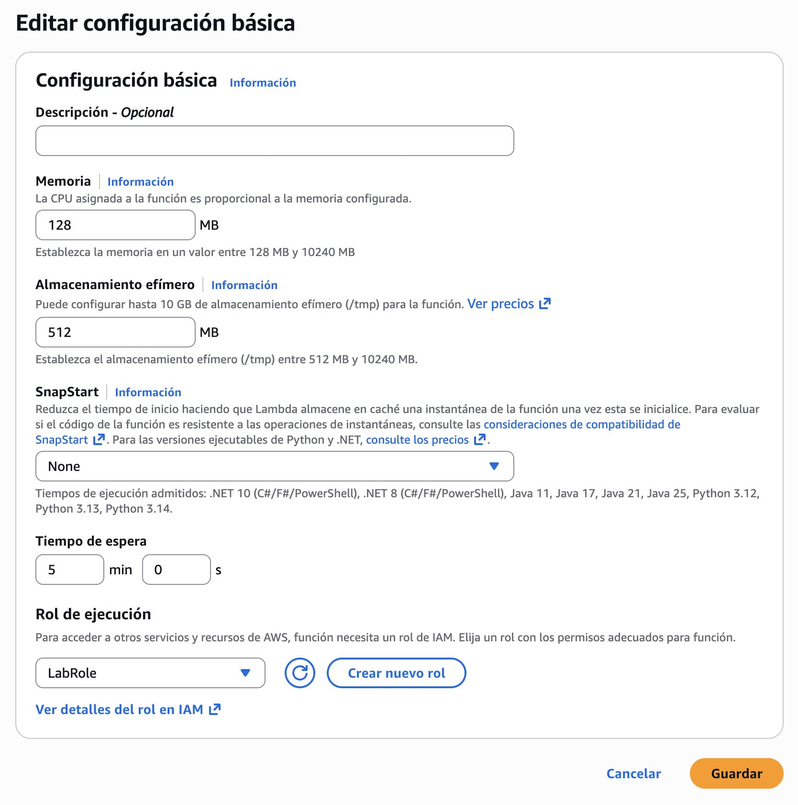
Figura 13. Configuració del timeout de la funció Lambda.
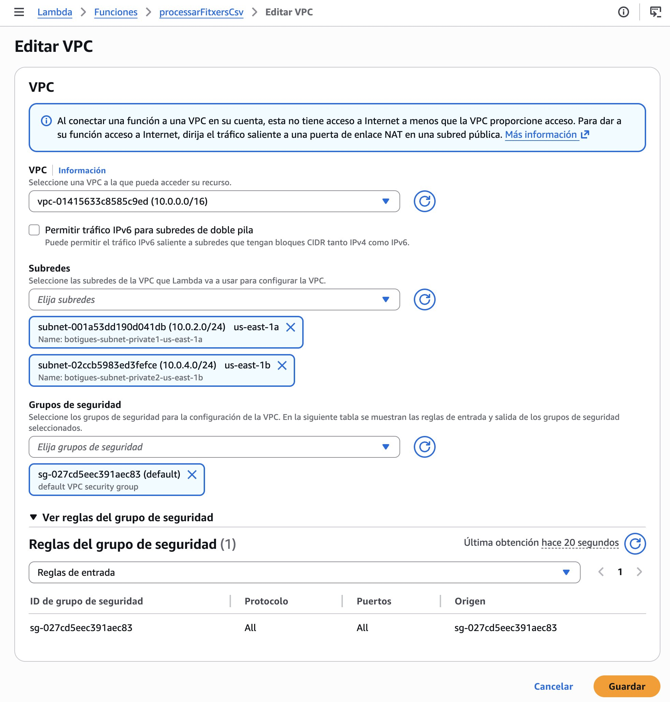
Figura 14. Configuració de la VPC a la funció Lambda.
- Provar la funció Lambda i el desencadenador de SQS:
- Des de S3, pujar un fitxer CSV vàlid a
validat/mitjançant el botó Cargar. - Des de Lambda, anar a la pestanya Monitorear, clicar al botó Ver registros de CloudWatch a CloudWatch Logs.
- Des de CloudWatch, revisar els logs de la funció Lambda per veure que el fitxer s’ha processat i que les dades s’han carregat a RDS.
- Des de SQS, verificar que el missatge associat al fitxer processat ha estat eliminat de la cua.
- Des de EC2, connectar-se a la base de dades RDS i executar una consulta SQL per a verificar que les dades del fitxer CSV s’han carregat correctament a la base de dades.
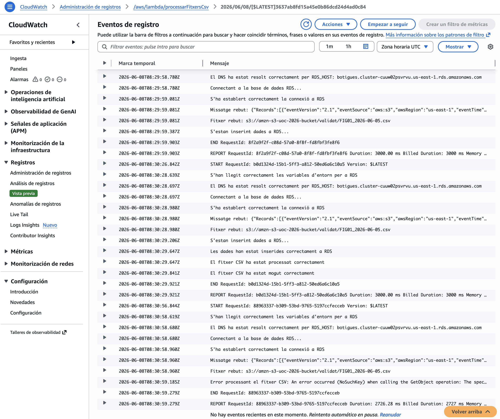
Figura 15. Logs de CloudWatch després de processar un fitxer CSV.
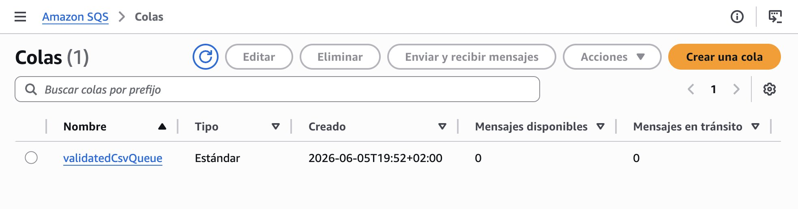
Figura 16. Cua de SQS després de processar un fitxer CSV.
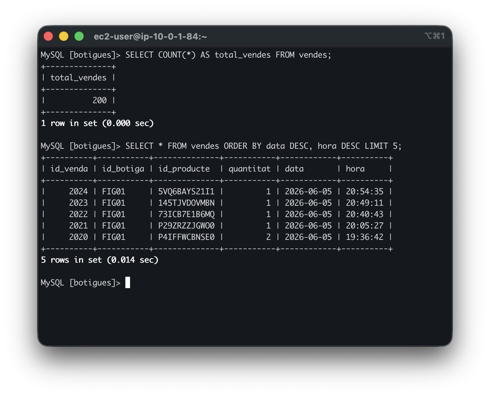
Figura 17. Dades a RDS després de processar un fitxer CSV.
SELECT COUNT(*) AS total_vendes FROM vendes;
SELECT * FROM vendes ORDER BY data DESC, hora DESC LIMIT 5;
carpeta s3 després de moure el fitxer:
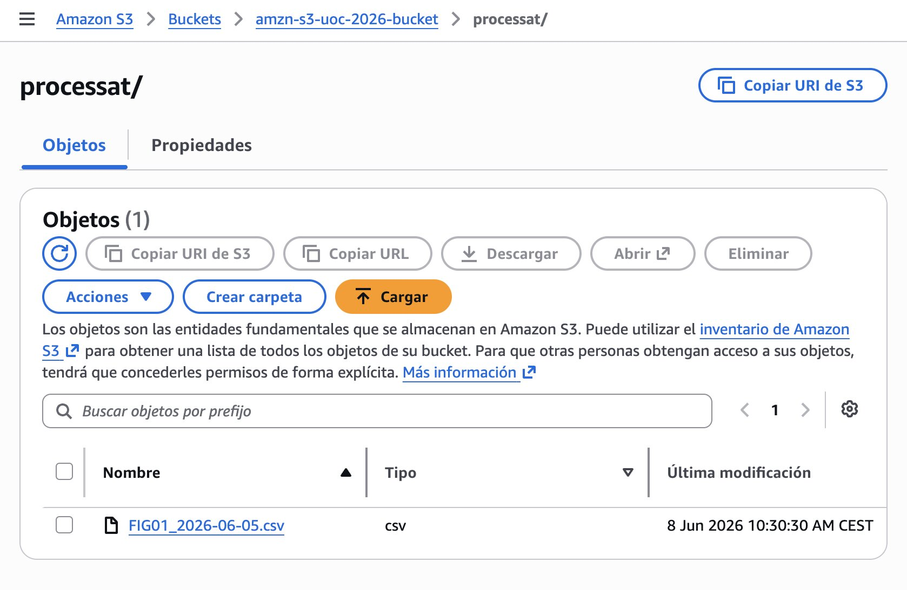
Figura 18. Contingut del bucket de S3 després de processar un fitxer CSV.
Restriccions del laboratori Amazon Relational Database Service (RDS):
- Aquest servei pot assumir el rol IAM LabRole.
- Els motors de base de dades compatibles són els següents: Amazon Aurora (aprovisionat), Oracle, Microsoft SQL, MySQL, PostgreSQL i MariaDB. Nota: Si creeu una instància de RDS mitjançant una plantilla de CloudFormation, assegureu-vos d'especificar el tipus de motor amb lletres minúscules.
- Tipus d'instàncies compatibles: nano, micro, petita i mitjana (Suggeriment: Trieu Classes ampliables per trobar-les).
- Tipus d'emmagatzematge compatibles: volums d'EBS de fins a 100 GB i tipus SSD d'ús general (gp2). No admet els tipus d'emmagatzematge PIOPS.
- Solament admet els tipus de classe d'instància de base de dades sota demanda.
- No admet la supervisió millorada (ha de desmarcar aquesta configuració predeterminada al panell Configuració addicional/Supervisió).
Consulta dels fitxers CSV processats amb Athena (servei addicional)¶
En aquesta part s'utilitza Amazon Athena, com a servei addicional, per a consultar directament els fitxers CSV que han estat processats i emmagatzemats a la carpeta processat/ del bucket de S3. D'aquesta manera es pot validar que les dades processades per Lambda es poden analitzar mitjançant consultes SQL sense necessitat de carregar-les prèviament a una base de dades relacional.
Athena permet crear una taula externa sobre els fitxers CSV ubicats a S3 i executar consultes SQL sobre aquests fitxers. Aquesta prova complementa la validació feta amb RDS, ja que permet comprovar les dades directament al data lake de S3.
- Configurar la ubicació dels resultats de les consultes d'Athena:
- Anar al cercador de serveis i obrir Athena.
- Entrar a Query editor.
- Si és la primera vegada que s'utilitza Athena, configurar la ubicació on es desaran els resultats de les consultes.
- Indicar una ruta dins del bucket de S3, per exemple:
s3://amzn-s3-uoc-2026-bucket/athena-results/
- Aquesta carpeta s'utilitzarà perquè Athena pugui escriure els resultats generats per les consultes SQL.
- Crear una base de dades a Athena per al projecte:
- Des del Query editor d'Athena, executar la següent sentència SQL:
CREATE DATABASE IF NOT EXISTS botigues_athena;
- Un cop creada la base de dades, seleccionar-la al desplegable de l'esquerra o executar:
USE botigues_athena;
- Crear una taula externa sobre els fitxers CSV processats:
Els fitxers CSV de vendes processades estan ubicats a la carpeta processat/ del bucket de S3:
s3://amzn-s3-uoc-2026-bucket/processat/
Per consultar-los amb Athena, es crea una taula externa que apunta directament a aquesta ubicació de S3:
CREATE EXTERNAL TABLE IF NOT EXISTS vendes_processades (
id_botiga string,
data string,
hora string,
id_producte string,
departament string,
talla string,
preu double,
unitats int,
color string,
descripcio string
)
ROW FORMAT SERDE 'org.apache.hadoop.hive.serde2.OpenCSVSerde'
WITH SERDEPROPERTIES (
"separatorChar" = ",",
"quoteChar" = "\"",
"escapeChar" = "\\"
)
LOCATION 's3://amzn-s3-uoc-2026-bucket-ipc/processat/'
TBLPROPERTIES (
"skip.header.line.count"="1"
);
Aquesta configuració indica a Athena que ha de llegir tots els fitxers CSV de la carpeta processat/ com si fossin una única taula SQL. També s'indica que la primera línia dels fitxers correspon a la capçalera i no s'ha de tractar com una fila de dades.
- Comprovar que Athena pot llegir les dades de S3:
- Executar una consulta de recompte per verificar que Athena detecta les files dels fitxers CSV processats:
SELECT COUNT(*) AS total_vendes_processades
FROM vendes_processades;
- Validar les vendes més recents:
Per comprovar que les dades es poden ordenar i analitzar correctament, es pot executar una consulta semblant a la utilitzada amb RDS:
SELECT *
FROM vendes_processades
ORDER BY data DESC, hora DESC
LIMIT 5;
- Fer comprovacions agregades sobre les dades processades:
Per comprovar les unitats venudes per producte, s'executa la consulta següent:
SELECT id_producte, SUM(unitats) AS total_unitats
FROM vendes_processades
GROUP BY id_producte
ORDER BY total_unitats DESC
LIMIT 10;
Per comprovar el volum de vendes per botiga:
SELECT id_botiga, COUNT(*) AS num_vendes, SUM(unitats) AS unitats_totals
FROM vendes_processades
GROUP BY id_botiga
ORDER BY num_vendes DESC;
Per calcular l'import total venut:
SELECT
SUM(preu * unitats) AS import_total
FROM vendes_processades;
Captures d'algunes de les consultes:
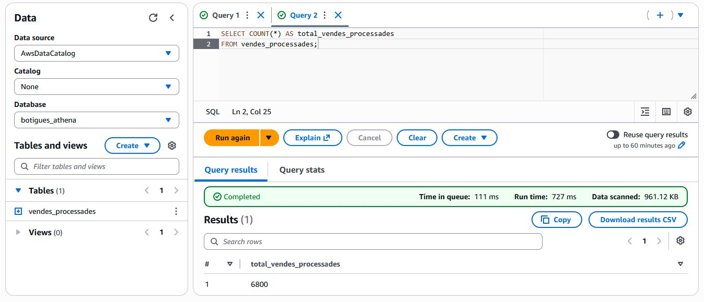
Figura 18. Consulta Athena: recompte de vendes
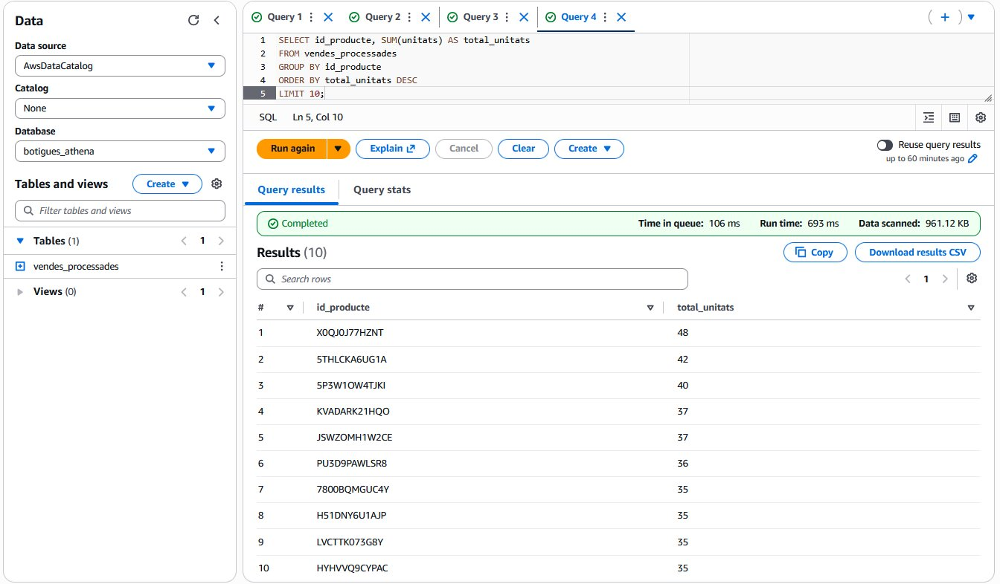
Figura 19. Consulta Athena: unitats venudes
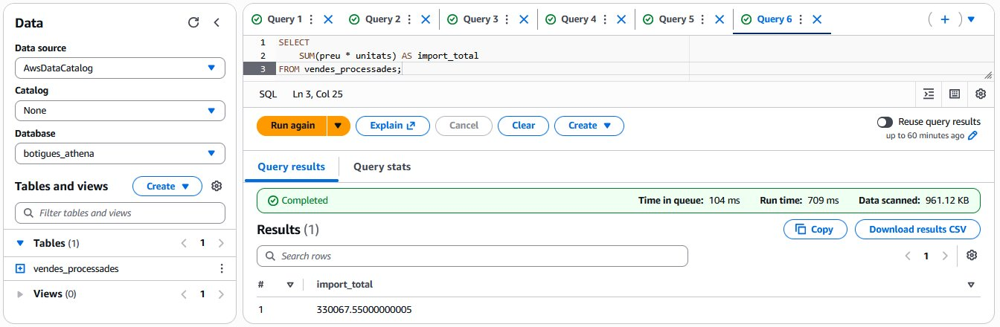
Figura 20. Consulta Athena: import total de vendes
Exercici 3: KPIs Específics per a un Projecte d'Anàlisi de Dades a AWS (2 punts)¶
En un projecte d'anàlisi de dades desenvolupat a AWS (Amazon Web Services), els KPIs no només se centren en els resultats de la informació (la precisió de les dades o els insights generats), sinó també en el rendiment, l'eficiència i el cost de la infraestructura cloud.
Heu de fer un petit informe amb indicadors d'aquests 4 punts. Heu d'explicar quines accions proposaríeu per aconseguir els objectis que es detallen. A la descripció es detallen uns valors en % o en termes absoluts. Són simplement orientatius i pretenen il·lustrar com serien els KPIs en un cas real.
1. KPIs de Cost i Eficiència d'AWS (FinOps)¶
- KPI: Cost Mitjà per Càrrega de Treball
- Descripció: El cost total d'AWS / Quantitat de dades processades o insights generats.
- Objectiu del Projecte: Reduir el cost per unitat d'anàlisi en un 10%.
- KPI: Taxa d'Utilització dels Recursos
- Descripció: Percentatge de temps en què els recursos d'AWS provisionats s'estan utilitzant activament.
- Objectiu del Projecte: Mantenir per sobre del 80%.
- KPI: Cost d'Emmagatzematge per GB
- Descripció: Cost mensual per mantenir les dades al data lake (S3 o equivalent).
- Objectiu del Projecte: Optimitzar l'emmagatzematge amb polítiques de retenció adequades.
2. KPIs de Rendiment i Velocitat¶
- KPI: Temps de Latència de la Consulta
- Descripció: Temps mitjà de resposta de consultes crítiques (en segons).
- Objectiu del Projecte: Reduir la latència de les consultes clau per sota de 5 segons.
- KPI: Temps d'Execució del Pipeline ETL
- Descripció: Temps total (en minuts) des de l'ingesta de dades fins a la disponibilitat per a l'anàlisi (AWS Glue/Step Functions).
- Objectiu del Projecte: Reduir el temps d'execució del pipeline ETL en un 15%.
- KPI: Taxa de Creixement de Dades
- Descripció: GB/TB de dades noves ingerit al dia/mes.
- Objectiu del Projecte: Assegurar que el sistema (Kinesis/MSK) pugui escalar per gestionar aquest volum.
3. KPIs de Qualitat i Fiabilitat de les Dades¶
- KPI: Taxa d'Error d'Ingesta
- Descripció: Percentatge de registres o fitxers que fallen en la validació durant la càrrega a AWS S3.
- Objectiu del Projecte: Mantenir la taxa d'error d'ingesta per sota del 0,5%.
- KPI: Percentatge d'Inconsistència de Dades
- Descripció: Número d'entrades no vàlides / Total d'entrades analitzades.
- Objectiu del Projecte: Eliminar o minimitzar les dades inconsistents.
- KPI: Disponibilitat del Servei
- Descripció: Temps que els serveis d'anàlisi (Redshift, QuickSight) estan operatius (en percentatge).
- Objectiu del Projecte: Mantenir la disponibilitat del servei per sobre del 99,9%.
4. KPIs d'Impacte i Adopció¶
- KPI: Adopció dels Informes
- Descripció: Usuaris actius diaris/setmanals que accedeixen als dashboards (QuickSight).
- Objectiu del Projecte: Augmentar l'ús dels dashboards clau en un 20% en tres mesos.
- KPI: Generació d'Ingressos (o Estalvi) Atribuïble
- Descripció: Valor monetari generat o estalviat gràcies als insights del projecte.
- Objectiu del Projecte: Demostrar un ROI positiu per al projecte.
- KPI: Precisió del Model Predictiu (si n'hi ha)
- Descripció: Mètrica clau del model de Machine Learning (Puntuació F1, AUC, o Precisió).
- Objectiu del Projecte: Assolir una precisió del model del 90% o superior.
Rúbrica d'Avaluació per a la Validació dels KPIs, cada apartat val 0,5 punts¶
| Criteri / Bloc | Excel·lent (4) | Bo (3) | Satisfactori (2) | Necessita Millora (1) |
|---|---|---|---|---|
| 1. Cost i Eficiència d'AWS (FinOps) | Proposa una estratègia FinOps completa: automatització de cicles de vida (S3 Lifecycle), right-sizing i ús d'arquitectures dinàmiques. | Proposa accions clares i viables de right-sizing i polítiques d'emmagatzematge automatitzades per reduir costos. | Les propostes són molt bàsiques, genèriques o basades en accions manuals poc eficients a llarg termini. | No proposa cap mesura o les solucions plantejades no tenen impacte real en l'estalvi de costos. |
| 2. Rendiment i Velocitat | Proposa solucions avançades d'alta eficiència: models de streaming (temps real), particionat òptim i escalabilitat nativa. | Proposa canvis viables per millorar consultes (indexació/particionat) i automatitzar l'escalat de la infraestructura. | Proposa millores febles o reactives que no resolen el problema de fons ni garanteixen l'escalabilitat del sistema. | Les solucions proposades són inviables o directament no es planteja com millorar la velocitat i el rendiment. |
| 3. Qualitat i Fiabilitat de les Dades | Proposa un sistema resilient amb observabilitat de punta a punta, reprocessament automàtic d'errors i alta disponibilitat. | Proposa validacions automatitzades a l'ingesta, gestió d'errors (DLQ) i mecanismes bàsics de tolerància a fallades. | Les solucions són parcials: es detecten errors de qualitat de forma manual o el disseny és feble davant caigudes. | Manca total de propostes per validar les dades o per assegurar la disponibilitat del servei. |
| 4. Impacte i Adopció | Proposa un disseny totalment centrat en l'usuari final, integració en la presa de decisions, mesura del ROI i MLOps (si cal). | Proposa mecanismes concrets per recollir feedback, mesurar el valor de negoci (ROI) i fomentar l'ús de l'eina. | Proposa accions febles d'adopció (ex. fer només un manual) o la justificació del ROI és molt ambigua. | No es planteja com afectarà l'usuari final ni com es mesurarà l'impacte real del projecte. |
Adjunta l'explicació aquí. Les explicacions són captures de pantalla, del que demostrareu en la entrevista de l'activitat
RESPOSTA:
Per analitzar els KPIs del projecte s’ha generat un conjunt de dades sintètiques escalat fins a representar aproximadament 100.000 peces de roba venudes diàriament. La prova manté les 30 botigues i la mateixa estructura de fitxers CSV i pipeline implementada als exercicis anteriors.
El volum obtingut en aquesta prova és el següent:
| Magnitud | Càlcul | Valor |
|---|---|---|
| Botigues | - | 30 |
| Registres diaris | Resultat de la prova generada | 76.000 |
| Peces venudes diàries | - | 96.550 |
| Fitxers CSV diaris | Un fitxer per botiga | 30 |
| Mida estimada per registre | - | 150 bytes |
| Volum diari aproximat | 76.000 × 150 bytes | 11,4 MB |
| Volum mensual aproximat | 11,4 MB × 30 dies | 342 MB |
| Volum anual aproximat | 11,4 MB × 365 dies | 4,16 GB |
1. KPIs de Cost i Eficiència d’AWS (FinOps)¶
1.1 KPI: Cost Mitjà per Càrrega de Treball¶
Aquest KPI relaciona el cost estimat de la infraestructura amb el volum de dades que la pipeline pot processar. Per calcular-lo s’ha reproduït l’arquitectura del projecte a AWS Pricing Calculator, utilitzant la regió US East (N. Virginia) i estimant un ús mensual realista dels serveis S3, Lambda, SQS, RDS, Athena, EC2 i CloudWatch.
La configuració considerada inclou 900 execucions mensuals de cada funció Lambda, corresponents a 30 fitxers diaris durant 30 dies; una cua SQS per canalitzar els fitxers validats; una base de dades RDS Multi-AZ amb dues instàncies db.t3.small; Athena per a les consultes analítiques; una instància EC2 auxiliar i l’emmagatzematge i monitoratge necessaris.
L’estimació obtinguda és la següent:
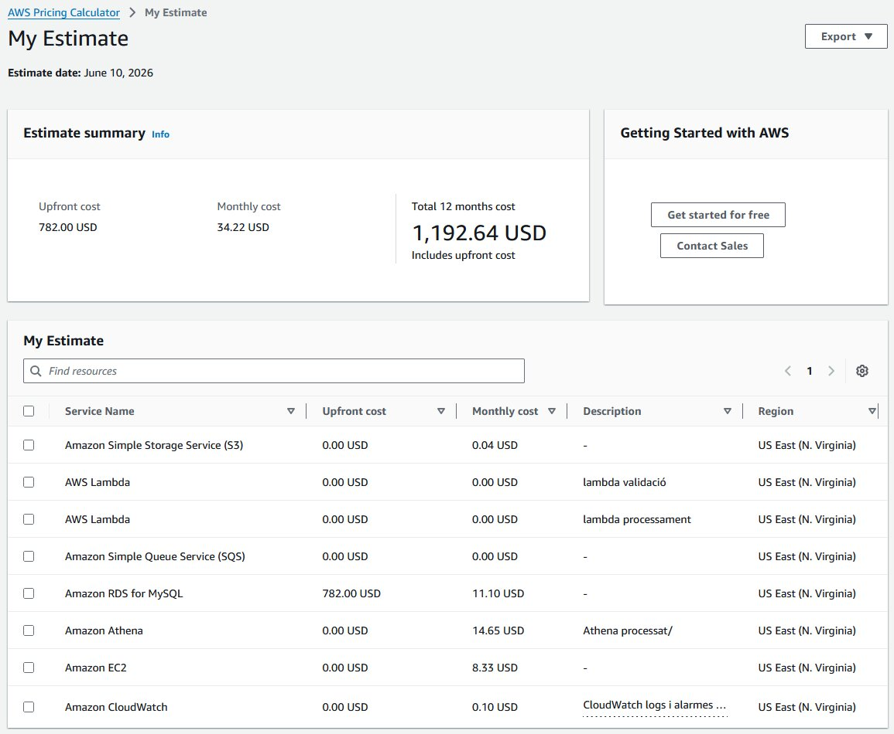
Figura 3.1. Resum de l’estimació d’AWS Pricing Calculator del projecte.
L’enllaç directe a l’estimació es pot consultar aquí: https://calculator.aws/#/estimate?id=5dc17d96775969bfadc86e6904d54e2a3039cac7.
La taula següent resumeix la configuració introduïda a AWS Pricing Calculator per a cada servei. A la tercera columna s’adjunten les captures del desglossament del càlcul, on es poden consultar la configuració completa i el cost estimat.
| Servei | Configuració estimada | Captura del càlcul |
|---|---|---|
| Amazon S3 | 1 GB mensual d’emmagatzematge S3 Standard, 3.000 peticions PUT, COPY, POST o LIST i 2.000 peticions GET, SELECT o similars. |
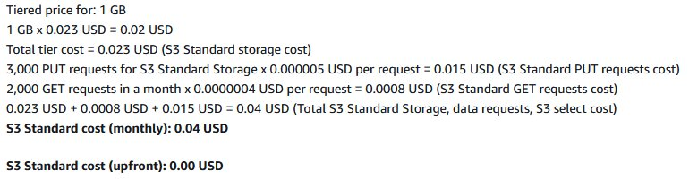 |
| AWS Lambda – validació | Mode d’invocació buffered, arquitectura x86, 900 peticions mensuals i 512 MB d’emmagatzematge efímer assignat. |
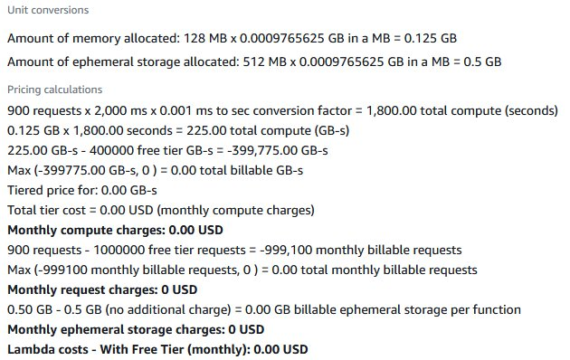 |
| AWS Lambda – processament | Mode d’invocació buffered, arquitectura x86, 900 peticions mensuals i 512 MB d’emmagatzematge efímer assignat. |
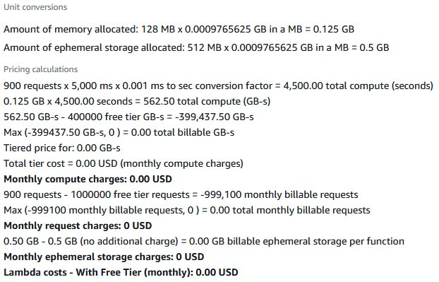 |
| Amazon SQS | Cua estàndard amb 0,001 milions de peticions mensuals i sense transferència de dades d’entrada o sortida estimada. |
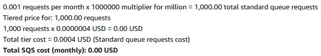 |
| Amazon RDS for MySQL |
Desplegament Multi-AZ amb dos nodes db.t3.small, 20 GB d’emmagatzematge SSD gp2 per instància, utilització mensual del 100%, reserva d’un any amb pagament inicial, 20 GB addicionals per a còpies de seguretat i 0,4 GB mensuals processats per a exportació.
|
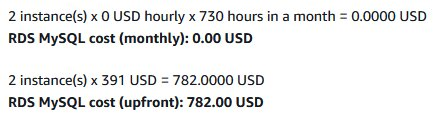 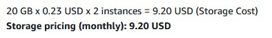 |
| Amazon Athena | 300 consultes mensuals, amb una estimació de 10 GB de dades escanejades per consulta. |
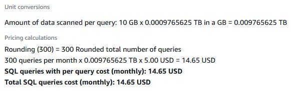 |
| Amazon EC2 |
Instància Linux t3.micro sota demanda i amb tinença compartida, càrrega mensual base d’una instància i pic de dues instàncies durant 8 hores, monitoratge detallat desactivat i 8 GB d’emmagatzematge EBS. No s’estima transferència de dades.
|
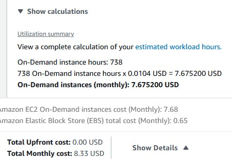 |
| Amazon CloudWatch | Ingesta estimada de 0,2 GB mensuals de logs estàndard i escaneig de 0,1 GB. No s’han afegit mètriques personalitzades ni peticions addicionals de consulta de mètriques. |
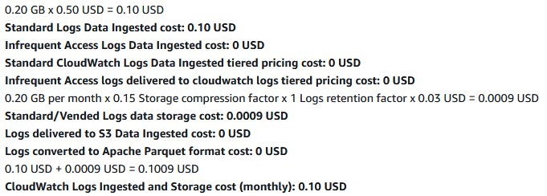 |
El cost mensual equivalent s’obté distribuint el pagament inicial i la resta de costos del primer any entre dotze mesos:
1.192,64 USD / 12 mesos = 99,39 USD/mes
Amb 76.000 registres, 96.550 peces venudes i 30 fitxers diaris, el volum mensual aproximat és:
| Indicador mensual | Valor |
|---|---|
| Registres processats | 2.280.000 |
| Peces venudes representades | 2.896.500 |
| Fitxers CSV processats | 900 |
| Cost mensual equivalent | 99,39 USD |
A partir d’aquests valors, s’obtenen els costos unitaris següents:
| Indicador | Càlcul | Valor |
|---|---|---|
| Cost per 1.000 registres | 99,39 / 2.280 | 0,0436 USD |
| Cost per 1.000 peces venudes | 99,39 / 2.896,5 | 0,0343 USD |
| Cost per fitxer CSV | 99,39 / 900 | 0,1104 USD |
| Cost per botiga i mes | 99,39 / 30 | 3,31 USD |
Els serveis serverless de la pipeline, com Lambda i SQS, tenen un cost molt baix amb el volum estimat. La part principal del cost correspon a la base de dades provisionada, al pagament inicial de la reserva, a les consultes d’Athena i a la instància EC2 auxiliar.
Les accions amb més impacte per reduir el cost per unitat d’anàlisi serien:
Revisar la configuració de la base de dades. RDS és el component amb més pes en el cost anual. Caldria valorar si la configuració Multi-AZ i la classe
db.t3.smallsón necessàries en tots els entorns. En desenvolupament es podria utilitzar una configuració més petita o Single-AZ, mantenint Multi-AZ per a producció.Aplicar polítiques de retenció i lifecycle a S3.
Les dades recents es mantindrien a S3 Standard, però els resultats temporals d’Athena i les carpetes intermèdies es podrien eliminar automàticament. Les dades històriques poc consultades es podrien moure a S3 Standard-IA o Glacier.Fer right-sizing dels recursos provisionats.
Es podria ajustar la mida i la configuració dels serveis a l’ús real observat. Per exemple, revisar si la mida de RDS és adequada, apagar EC2 quan no s’utilitza i utilitzar configuracions menys costoses en entorns de proves. En producció es pot mantenir Multi-AZ, però en desenvolupament es podria usar Single-AZ.Configurar alertes de despesa i limitar execucions inesperades En un entorn real es definiria un pressupost a AWS Budgets amb llindars personalitzats i notificacions per correu electrònic quan el cost real o previst s’apropés al límit establert. Les funcions Lambda es poden configurar amb un timeout, un nombre de reintents i una concurrència ajustats a la càrrega esperada.
1.2 KPI: Taxa d’Utilització dels Recursos¶
La taxa d’utilització mesura el grau d’ús real dels recursos provisionats. En aquest projecte hi ha serveis serverless, com Lambda, SQS, S3 i Athena, que només consumeixen segons l’ús, i serveis provisionats, com RDS i EC2, que poden generar cost encara que no tinguin una càrrega constant.
En les mètriques observades a RDS, la CPU es manté habitualment al voltant del 14–16%, amb un pic puntual del 31,3%. El nombre de connexions és molt baix, amb un màxim d’1 connexió en moments puntuals. La memòria lliure es manté disponible i les latències de lectura i escriptura són baixes, amb lectures generalment per sota d’1 ms i escriptures al voltant d’1–1,5 ms, amb un pic puntual de 2,9 ms.
|
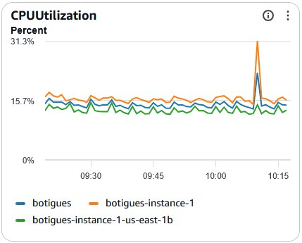 |
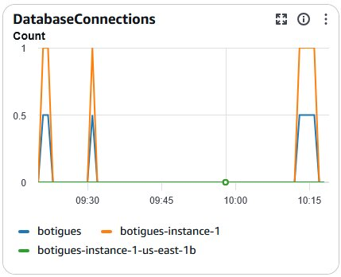 |
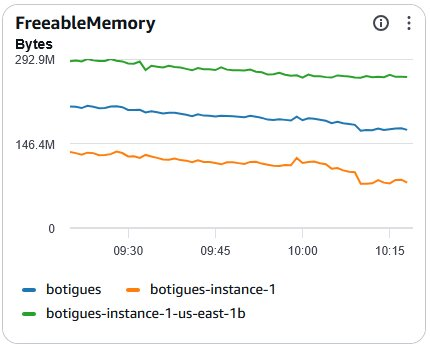 |
|
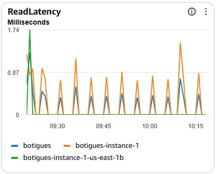 |
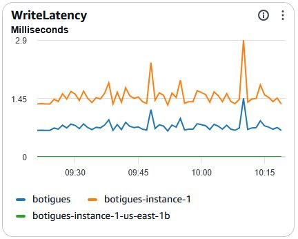 |
Figura 3.2. Mètriques d’utilització d’Amazon RDS durant la prova: CPU, connexions, memòria disponible i latències de lectura i escriptura.
Aquests valors indiquen que RDS no està saturat i que encara té marge per assumir més càrrega. Tot i això, com que RDS és un servei provisionat, continua generant cost encara que l’ús real sigui baix.
EC2, en canvi, té un ús auxiliar. Només s’utilitza per tasques com connectar-se a RDS, crear taules, executar comprovacions, baixar fitxers de S3 o crear la capa de Lambda. Per tant, no hauria d’estar encesa de manera permanent.
Les accions més importants serien:
Apagar EC2 quan no s’utilitza.
Redueix cost directament, ja que EC2 no forma part de la pipeline permanent.Revisar RDS segons l’ús real.
Les mètriques de CPU, memòria i connexions permeten determinar si la instànciadb.t3.smallés adequada o si es pot reduir en un entorn de proves. Amb Amazon Aurora, Aurora Auto Scaling podria ajustar automàticament el nombre de rèpliques de lectura segons les mètriques de càrrega i els límits configurats.Separar ús operacional i ús analític.
RDS pot quedar per a consultes operacionals i dades recents, mentre que S3 + Athena pot assumir l’anàlisi històrica.Valorar alternatives serverless si la càrrega és molt variable.
Si la càrrega fos molt discontínua, es podria estudiar Aurora Serverless. Si la pipeline creix en complexitat, Step Functions o Glue podrien ajudar a reorganitzar el processament.Diferenciar escalat vertical i escalat horitzontal.
Si el problema és que una instància queda curta de CPU, memòria o connexions, es podria aplicar escalat vertical augmentant la classe de la instància RDS. Si el problema és un augment de consultes de lectura, es podria valorar escalat horitzontal amb rèpliques de lectura, per exemple en una arquitectura Aurora.
1.3 KPI: Cost d’Emmagatzematge per GB¶
En la prova escalada s’han generat 76.000 registres diaris, amb una mida estimada de 150 bytes per registre.
| Magnitud | Càlcul | Valor |
|---|---|---|
| Volum diari aproximat | 76.000 × 150 bytes | 11,4 MB |
| Volum mensual aproximat | 11,4 MB × 30 dies | 342 MB |
| Volum anual aproximat | 11,4 MB × 365 dies | 4,16 GB |
| Volum aproximat en dos anys | 4,16 GB × 2 | 8,32 GB |
El cost inicial d’emmagatzematge és baix, però cal definir polítiques de retenció per evitar un creixement innecessari de les carpetes intermèdies i dels resultats temporals.
Política de retenció proposada:
| Ruta o tipus de dada | Retenció proposada | Motiu |
|---|---|---|
entrada/ |
Eliminar després de validar | Evitar conservar fitxers que ja han estat classificats |
validat/ |
Eliminar després de processar | És una carpeta intermèdia |
error/ |
Entre 30 i 90 dies | Permetre auditoria, correcció i reprocessament |
processat/ |
Conservar durant dos anys | És la font analítica principal |
Històric de processat/ |
Traslladar a S3 Glacier després de dos anys | Reduir el cost de dades poc consultades |
athena-results/ |
Entre 7 i 30 dies | Són resultats temporals |
Aquesta política no s’ha implementat en la pràctica, però representa la proposta per a un entorn real.
Les accions més rellevants són:
Lifecycle automàtic a S3.
Permet eliminar o moure dades segons la seva antiguitat sense accions manuals.Ús de classes d’emmagatzematge més econòmiques.
S3 Standard-IA o Glacier serien útils per dades històriques poc consultades.Conversió a Parquet.
Redueix la mida ocupada i també la quantitat de dades escanejades per Athena.Monitoritzar el creixement del bucket. Cal revisar periòdicament la mida total i el nombre d’objectes emmagatzemats.
2. KPIs de Rendiment i Velocitat¶
2.1 KPI: Temps de Latència de la Consulta¶
Aquest KPI mesura el temps mitjà de resposta de les consultes principals. En les proves, les consultes executades des d’EC2 contra RDS han estat molt ràpides.
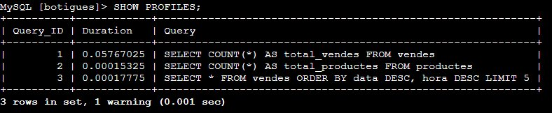
Figura 3.3. Temps d’execució de les consultes SQL principals executades des d’EC2 contra Amazon RDS.
| Consulta RDS | Temps observat |
|---|---|
| Recompte de vendes | 0,05767025 s |
| Recompte de productes | 0,00015325 s |
| Consulta de vendes recents | 0,00017775 s |
Aquests resultats compleixen clarament l’objectiu de mantenir la latència per sota de 5 segons. Amb el volum provat, la latència no representa un problema per al projecte.
Les mètriques de RDS també mostren latències baixes: la latència de lectura es manté generalment per sota d’1 ms i la latència d’escriptura se situa habitualment al voltant d’1–1,5 ms, amb algun pic puntual. Això indica que la base de dades respon correctament durant la càrrega i consulta de les dades.
La comunicació entre Lambda i S3 es realitza mitjançant un endpoint de VPC. Això permet accedir a S3 sense utilitzar internet públic ni un dispositiu NAT, mantenint el trànsit dins de la xarxa d’AWS i proporcionant una ruta privada i controlada.
Les accions amb més impacte serien:
Particionar les dades a S3 per data i botiga. Això permet que Athena llegeixi només els fitxers necessaris.
Convertir els CSV a Parquet. Parquet és més eficient per a consultes analítiques i redueix les dades escanejades.
Crear índexs a RDS. Índexs sobre camps com
data,id_botigaiid_producteajudarien a mantenir una latència baixa.Evitar consultes massa àmplies. Cal filtrar per període, botiga o producte quan no sigui necessari consultar tot l’històric.
Separar consultes operacionals i analítiques. RDS pot servir les consultes operacionals i Athena pot assumir l’anàlisi de l’històric.
2.2 KPI: Temps d’Execució del Pipeline ETL¶
El temps d’execució de la pipeline ETL mesura el temps des que un fitxer entra al sistema fins que les dades queden disponibles per a l’anàlisi.
Les mètriques observades de Lambda són:
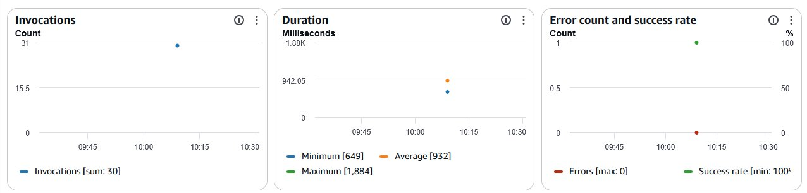
Figura 3.4. Mètriques de la funció Lambda de validació durant la prova dels 30 fitxers CSV.
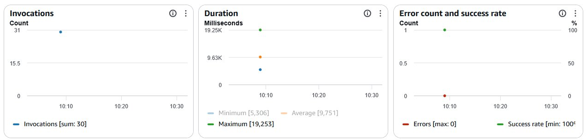
Figura 3.5. Mètriques de la funció Lambda de processament durant la prova dels 30 fitxers CSV.
| Fase | Invocacions | Durada mitjana per invocació | Durada màxima | Errors |
|---|---|---|---|---|
| Lambda de validació | 30 | 932 ms | 1.884 ms | 0 |
| Lambda de processament | 30 | 9.751 ms | 19.253 ms | 0 |
La durada mostrada per CloudWatch correspon a cada invocació de Lambda, no al temps total del lot complet. Per tant, es pot interpretar que, de mitjana, cada fitxer ha necessitat uns 932 ms per a la validació i uns 9.751 ms per al processament i càrrega a RDS.
El temps mitjà de còmput Lambda per fitxer és aproximadament:
932 ms + 9.751 ms = 10.683 ms ≈ 10,7 segons per fitxer
Com que s’han processat 30 fitxers, es pot concloure que la pipeline ha executat correctament el flux de validació i càrrega per a tot el lot de la prova.
SQS també mostra un comportament correcte: s’han enviat 30 missatges, se n’han rebut 30 i se n’han eliminat 30.
|
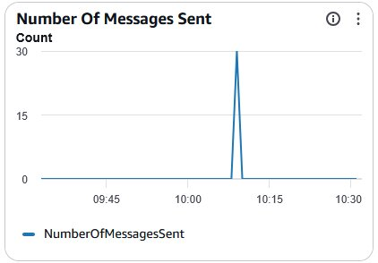 |
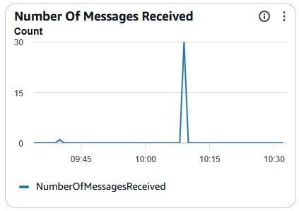 |
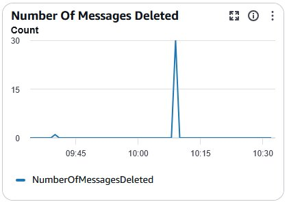 |
|
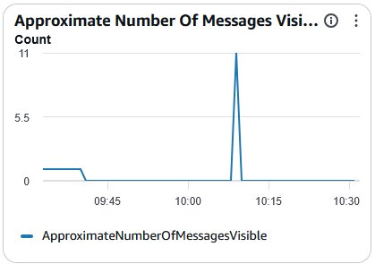 |
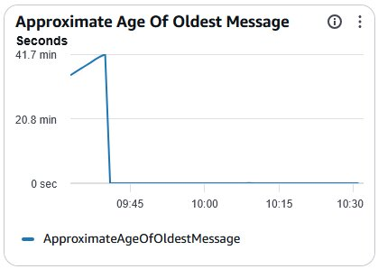 |
Figura 3.6. Mètriques d’Amazon SQS durant el processament del lot de 30 fitxers CSV.
| Mètrica SQS | Valor observat |
|---|---|
| Missatges enviats | 30 |
| Missatges rebuts | 30 |
| Missatges eliminats | 30 |
| Missatges pendents finals | 0 |
Les accions amb més impacte per reduir el temps ETL serien:
Fer insercions per lots a RDS. Inserir fila a fila pot ser lent amb fitxers grans. Fer inserts agrupats reduiria el temps de càrrega.
Ajustar memòria i timeout de Lambda. Amb fitxers més grans, pot caldre més memòria o més temps màxim d’execució.
Limitar el nombre de reintents davant errors persistents.
Controlar la concurrència de Lambda. Permet processar més fitxers en paral·lel sense saturar RDS.
Afegir una Dead Letter Queue per conservar els missatges que fallen repetidament.
Valorar Glue o Step Functions si el pipeline creix. Glue seria útil per ETL batch més pesat, i Step Functions per orquestrar passos, reintents i errors de manera més controlada. Si es necessités ingesta quasi en temps real, es podria valorar Kinesis.
2.3 KPI: Taxa de Creixement de Dades¶
Aquest KPI mesura el volum de dades noves ingerides per dia, mes i any.
En l’escenari generat:
| Indicador | Valor diari | Valor mensual | Valor anual |
|---|---|---|---|
| Registres | 76.000 | 2.280.000 | 27.740.000 |
| Peces venudes | 96.550 | 2.896.500 | 35.240.750 |
| Fitxers CSV | 30 | 900 | 10.950 |
| Volum aproximat | 11,4 MB | 342 MB | 4,16 GB |
El volum anual és assumible per l’arquitectura actual. Tot i això, el KPI permet projectar com creixeria el sistema en un cas real i definir mesures abans que l’històric sigui molt més gran.
Les accions principals serien:
Monitoritzar el creixement mensual. Es poden controlar la mida total de S3, el nombre d’objectes i l’espai utilitzat a RDS.
Organitzar i optimitzar l’històric. Les dades es podrien particionar per data i botiga i convertir a Parquet, tal com s’ha explicat al KPI 2.1.
Aplicar la política de retenció. Els fitxers amb més de dos anys es traslladarien a Glacier, segons la proposta del KPI 1.3.
Evolucionar la pipeline si canvia el patró d’ingesta. Si el procés deixés de ser batch diari i passés a ser continu, es podria valorar Kinesis. Si augmentessin les fases i dependències, es podrien valorar Glue o Step Functions.
Escalar la infraestructura si el volum creix.
Si el volum de dades o el nombre de consultes augmentés molt, primer s’aplicarien optimitzacions de format i particionat. Si no fos suficient, es podria escalar verticalment RDS amb una instància més gran o evolucionar cap a una arquitectura amb escalat horitzontal de lectura.
3. KPIs de Qualitat i Fiabilitat de les Dades¶
3.1 KPI: Taxa d’Error d’Ingesta¶
La taxa d’error d’ingesta mesura el percentatge de fitxers o execucions que fallen durant la validació o el processament.
En aquesta prova s’han processat 30 fitxers. La Lambda de validació ha tingut 30 invocacions i 0 errors, i la Lambda de processament també ha tingut 30 invocacions i 0 errors. Per tant, la taxa d’error observada és del 0%.
0 errors / 60 invocacions totals = 0%
Tal com es mostra a les Figures 3.4, 3.5 i 3.6, les dues funcions Lambda han finalitzat sense errors i SQS ha processat correctament els 30 missatges.
Aquest resultat compleix l’objectiu de mantenir la taxa d’error d’ingesta per sota del 0,5%.
Les accions principals serien:
Mantenir la validació automàtica, que ja està implementada. Ajuda a rebutjar fitxers amb estructura incorrecta abans de carregar-los a RDS.
Millorar els logs d’error a CloudWatch. Permet saber exactament per què un fitxer ha fallat: capçalera incorrecta, camps buits, data invàlida, imports negatius, etc.
Afegir una DLQ per errors de processament. Una Dead Letter Queue permet conservar missatges que no s’han pogut processar i reintentar-los posteriorment.
Definir un procés de reprocessament de fitxers a
error/. Això evita perdre dades i permet corregir fitxers fallits.
3.2 KPI: Percentatge d’Inconsistència de Dades¶
Aquest KPI mesura el percentatge de registres que presenten algun problema de coherència respecte al model de dades esperat. En aquest projecte, les principals inconsistències que es volen evitar són fitxers amb capçaleres incorrectes, registres amb camps obligatoris buits, formats de data o hora incorrectes, unitats no vàlides, productes inexistents o duplicats generats per reprocessar el mateix fitxer.
En la prova real s’han processat 30 fitxers CSV. Les mètriques de Lambda mostren 0 errors tant en la funció de validació com en la funció de processament, i SQS mostra que els 30 missatges han estat enviats, rebuts i eliminats correctament. Això indica que els fitxers han superat el flux complet de validació i càrrega sense errors detectats.
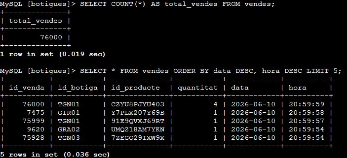
Figura 3.7. Validació a RDS del nombre de registres carregats i de les vendes més recents.
Tal com es mostra a la Figura 3.7, la consulta a RDS permet comprovar que s’han carregat 76.000 registres a la taula vendes i que les dades recents són consultables correctament.
El percentatge d’inconsistència observat es pot calcular així:
registres inconsistents / total de registres processats × 100
0 / 76.000 × 100 = 0%
La comparació entre Athena i RDS permet detectar duplicats, càrregues incompletes o reprocessaments accidentals. Els recomptes només han de coincidir exactament si tots dos sistemes representen el mateix conjunt de fitxers.
Les accions més importants serien:
Afegir control d’idempotència. Idempotència vol dir que si el mateix fitxer es processa dues vegades, el resultat final no es duplica. Es pot fer guardant el nom o hash del fitxer processat i ignorant-lo si ja existeix.
Mantenir claus foranes entre
vendesiproductes, que ja estan implementades. Això evita inserir vendes associades a productes inexistents.Validar camps obligatoris i valors positius abans d’inserir. Redueix inconsistències com quantitats negatives, preus incorrectes o dates nul·les.
Fer reconciliació periòdica entre Athena i RDS. Comparar recomptes ajuda a detectar duplicats, càrregues incompletes o reprocessaments accidentals.
3.3 KPI: Disponibilitat del Servei¶
La disponibilitat funcional de la pipeline es pot estimar a partir de les invocacions correctes de Lambda, el comportament de SQS i l’estat de RDS.
Tal com es mostra a les Figures 3.4, 3.5 i 3.6, les dues funcions Lambda han finalitzat sense errors i SQS ha processat correctament els 30 missatges. Això dona una taxa d’èxit del 100%:
(60 invocacions - 0 errors) / 60 = 100%
SQS també mostra que els 30 missatges enviats han estat rebuts i eliminats. Per tant, la taxa de processament de la cua també és del 100%:
30 missatges eliminats / 30 missatges enviats = 100%
Aquests resultats indiquen que, durant la prova, la pipeline ha estat disponible funcionalment i ha pogut completar el flux de validació, processament i càrrega.
Per mantenir aquesta disponibilitat en un entorn real, les accions més importants serien:
Mantenir RDS Multi-AZ en producció. Si falla la instància principal, RDS pot fer failover cap a una instància secundària situada en una altra zona de disponibilitat.
Activar els backups automatitzats. Permeten restaurar la base de dades a un punt dins del període de retenció configurat.
Crear snapshots setmanals. Es proposa conservar snapshots setmanals i comprovar periòdicament que el procés de restauració funciona correctament.
Utilitzar S3 com a font durable de reprocessament. Si falla Lambda o RDS, els fitxers es poden conservar temporalment i tornar a processar.
Configurar alarmes de CloudWatch. Les alarmes controlarien errors de Lambda, missatges pendents a SQS, edat del missatge més antic, CPU de RDS i connexions a la base de dades.
La DLQ i els límits de reintents ja s’han proposat al KPI 2.2.
Com a evolució futura, Aurora permetria utilitzar rèpliques per a les consultes de lectura. Si fallés la instància escriptora, una rèplica es podria promocionar com a nova escriptora. Aurora Auto Scaling permetria ajustar automàticament el nombre de rèpliques segons la càrrega.
4. KPIs d’Impacte i Adopció¶
4.1 KPI: Adopció dels Informes¶
Aquest KPI mesura fins a quin punt els usuaris de negoci utilitzen els informes o dashboards generats a partir del sistema.
En aquesta implementació s’ha fet la validació amb Athena, però en un entorn realista es podria afegir QuickSight o una web interna que consultés les dades de RDS o Athena. Això permetria que responsables de botiga, equips d’operacions o direcció accedissin als KPIs sense haver d’executar consultes SQL.
Indicadors d’adopció proposats:
- usuaris actius setmanals al dashboard o web interna;
- nombre de visualitzacions per informe;
- percentatge de responsables de botiga que consulten els dashboards;
- consultes o informes més utilitzats;
- feedback dels usuaris sobre claredat i utilitat;
- temps mitjà per obtenir un indicador abans i després del sistema.
Les accions més efectives serien:
Crear dashboards user-friendly. Informes visuals per botiga, producte, departament i període, pensats per usuaris no tècnics.
Definir informes per perfil d’usuari. Direcció pot necessitar visió global; responsables de botiga, dades de la seva botiga; operacions, estoc i productes.
Automatitzar resums o alertes. Per exemple, avisos de caiguda de vendes, productes amb baixa rotació o botigues amb rendiment anòmal.
Recollir feedback i iterar. Revisar periòdicament si els dashboards ajuden realment a prendre decisions.
4.2 KPI: Generació d’Ingressos o Estalvi Atribuïble¶
Aquest KPI mesura el valor econòmic generat o estalviat gràcies al projecte.
El cost mensual equivalent del primer any és de 99,39 USD, segons l’estimació feta amb AWS Pricing Calculator. Aquest valor inclou el cost inicial prorratejat i el cost recurrent mensual dels serveis S3, Lambda, SQS, RDS, Athena, EC2 i CloudWatch.
El projecte tindria un ROI positiu si els estalvis o ingressos atribuïbles superessin aquest cost equivalent mensual.
ROI = (benefici o estalvi atribuïble − cost del sistema) / cost del sistema × 100
En un entorn real, el llindar de 99,39 USD mensuals és molt baix. Una petita millora en reposició d’estoc, reducció de temps manual o detecció d’un producte amb baix rendiment ja podria compensar el cost.
Les accions principals serien:
Optimització comercial. Detectar productes, departaments i botigues amb millor o pitjor rendiment.
Eficiència operativa. Reduir el temps manual dedicat a validar, consolidar i carregar fitxers CSV.
Millora de la gestió d’estoc. Identificar productes amb baixa rotació o diferències de demanda entre botigues.
Mesura del ROI. Comparar l’estalvi de temps i les millores comercials amb el cost de la pipeline.
Control dels costos inesperats. Configurar pressupostos i notificacions per correu electrònic a AWS Budgets.
Per calcular el ROI real caldria quantificar les hores de treball estalviades i els ingressos o estalvis derivats de les decisions preses amb les dades.
4.3 KPI: Precisió del Model Predictiu¶
En aquesta versió del projecte no s’ha implementat cap model predictiu, per tant aquest KPI no aplica directament.
Com a evolució futura, es podria utilitzar l’històric de vendes per entrenar un model de predicció de demanda per botiga, producte o departament. En aquest cas, es podrien utilitzar mètriques com MAE, RMSE o MAPE per mesurar l’error de predicció.
L’objectiu seria aconseguir una predicció prou precisa per anticipar demanda, ajustar estoc i millorar la planificació comercial.
Exercici 4: Incorporació de scripts o codi rellevant (2,5 punts)¶
Incloeu els scripts o codi més rellevants que han estat utilitzats durant la implementació del projecte. Assegureu-vos que estan suficientment descrits per facilitar la comprensió de les operacions realitzades.
Durant la implementació del projecte a l'AWS Academy Learner Lab, és important incorporar i documentar els scripts o codi utilitzats. Caldria detallar els següents apartats:
1. Selecció dels Scripts Rellevants.¶
Els scripts més importants són aquells que realitzen les operacions clau del pipeline de dades:
- L'script en Python per a la generació de fitxers CSV de prova.
- L'script de la funció Lambda en Python per a la validació dels fitxers CSV.
- L'script de la funció Lambda en Python per al processament i càrrega a RDS.
- Les sentències SQL per a la creació de taules a RDS.
2. Descripció dels Scripts.¶
2.1 Script de Generació de Fitxers CSV de Prova¶
Aquest script en Python genera fitxers CSV amb dades de vendes simulades per a
les botigues. Utilitza la biblioteca csv per escriure els fitxers i random per
generar dades aleatòries. Els fitxers es desen localment a la carpeta data i
després es poden pujar a S3 a la carpeta entrada.
L'script genera una base dades de productes i després crea fitxers CSV amb registres de vendes per a 30 botigues. Si es torna executar l'script es poden generar fitxers amb dades de vendes diferents reutilitzant els productes.
El fitxer productes.csv té la següent estructura:
- id_producte: identificador únic del producte (cadena alfanumèrica de 12 caràcters)
- departament: categoria a la qual pertany el producte (Ex. home, dona, nen o nena)
- descripcio: breu descripció del producte
- preu: preu unitari del producte
Cada fitxer de vendes té la següent estructura:
- id_botiga: identificador de la botiga (Ex. BAR01, BAR02, LLE01, etc.)
- data: data de la venda en format YYYY-MM-DD
- hora: hora de la venda en format HH:MM:SS
- id_producte: identificador del producte venut (ha de coincidir amb un
id_productedel fitxer de productes) - departament: categoria del producte venut (ha de coincidir amb el departament del fitxer de productes)
- talla: talla del producte venut (Ex. S, M, L, XL, etc.)
- preu: preu unitari del producte venut (ha de coincidir amb el preu del fitxer de productes)
- unitats: nombre de unitats venudes
- descripcio: breu descripció de la venda (ha de coincidir amb la descripció del fitxer de productes)
2.2 Script de Lambda per a la validació dels fitxers CSV¶
Aquest script és una funció Lambda en Python que s’encarrega de validar els
fitxers CSV que arriben a la carpeta entrada/ de S3. La funció es dispara amb
un esdeveniment de S3 quan es puja un nou fitxer.
El codi llegeix el fitxer CSV, comprova que té la capçalera correcta i que cada registre compleix amb diverses validacions.
Si el fitxer és vàlid, es mou a la carpeta validat/. Si hi ha algun error, es
mou a la carpeta error/ i es registra l’error a CloudWatch Logs.
El codi de la funció Lambda utilitza la biblioteca boto3 per interactuar amb S3 i la biblioteca csv per llegir els fitxers CSV.
2.3 Script de Lambda per al processament i càrrega a RDS¶
Aquest script és una funció Lambda en Python que processa els fitxers CSV que
han passat la validació i que es troben a la carpeta validat/ de S3. Aquesta
funció es dispara amb un esdeveniment de SQS, ja que quan s'afegeix un fitxer a
la carpeta validat/, s'envia un missatge a una cua SQS que activa aquesta
funció Lambda.
El codi llegeix el fitxer CSV, processa les dades i les carrega a la base de
dades RDS compatible amb MySQL. Utilitza la biblioteca pymysql per connectar-se
a la base de dades i executar les insercions. El codi també gestiona errors de
connexió i d'inserció, a més es manté un registre dels resultats parcials a
CloudWatch.
La biblioteca pymysql no està disponible per defecte a Lambda, per això s’ha
creat una capa de Lambda que inclou aquesta biblioteca i s'ha adjuntat a la
funció.
La biblioteca boto3 també s'utilitza per llegir els fitxers de S3 i moure'ls
després de processar-los correctament. Si el processament és correcte, el fitxer
es mou a la carpeta processat/.
Per a aquest script, és important configurar correctament les variables d'entorn per a la connexió a RDS, com ara el nom d'usuari, contrasenya, nom de la base de dades i l'endpoint.
2.4 Sentències SQL per a la creació de les taules a RDS¶
Aquest script SQL s’utilitza per crear les taules productes i vendes a la
base de dades MySQL de RDS. El script defineix l’esquema de les taules, incloent
els tipus de dades, les claus primàries i les claus foranes i la interacció
entre les taules. El codi SQL es pot executar des d’una instància EC2 amb un
client compatible amb MySQL. El codi SQL es pot trobar a l'exercici 2.
from IPython.display import Markdown
ruta = "./source/generador_dades_vendes.py"
with open(ruta, "r", encoding="utf-8") as f:
contingut = f.read()
Markdown(f"```python\n{contingut}\n```")
#!/usr/bin/env python3
import csv
import os
import random
import string
import sys
from datetime import date, datetime, timedelta
# -------------------------------
# CONFIGURACIÓ
# -------------------------------
N_PRODUCTES_DEPARTAMENT = 100
N_BOTIGUES = 30
FILE_PRODUCTES = "data/productes.csv"
multiplicador_ciutat = {"Barcelona": 3, "Lleida": 3, "Tarragona": 3}
ciutats = {
"Barcelona": "BCN",
"Lleida": "LLE",
"Tarragona": "TGN",
"Girona": "GIR",
"Sabadell": "SBD",
"Terrassa": "TRR",
"Reus": "REU",
"Mataró": "MAT",
"Manresa": "MAN",
"Vic": "VIC",
"Figueres": "FIG",
"Amposta": "AMP",
"Rubí": "RUB",
"Cerdanyola": "CER",
"Granollers": "GRA",
"Santa Coloma": "STA",
"Vilanova i la Geltrú": "VNG",
"Castelldefels": "CAT",
"Mollet del Vallès": "MOL",
"Igualada": "IGU",
}
departaments = ["home", "dona", "nen", "nena"]
talles = ["S", "M", "L", "X", "XL", "XXL"]
colors = ["blau", "vermell", "negre", "blanc", "verd", "groc"]
peces = [
"samarreta",
"pantalons",
"jaqueta",
"abric",
"dessuadora",
"camisa",
"bermudes",
"faldilla",
"vestit",
"top",
"jersei",
"parka",
"anorac",
"texans",
"pantalons curts",
]
teixits = [
"cotó suau",
"lli transpirable",
"polièster lleuger",
"punt elàstic",
"denim resistent",
"teixit tèrmic",
"teixit impermeable",
"llana càlida",
]
beneficis = [
"pensat per oferir el màxim confort",
"ideal per al dia a dia",
"perfecte per completar qualsevol look",
"dissenyat per garantir llibertat de moviment",
"amb un estil modern i atemporal",
"pensat per resistir l’ús continuat",
"amb un acabat d’alta qualitat",
]
adjectius = [
"elegant",
"modern",
"sofisticat",
"casual",
"atemporal",
"versàtil",
"còmode",
"refinat",
"actual",
"urbà",
]
# -------------------------------
# PREUS SEGONS TIPUS DE PEÇA
# -------------------------------
PREU_ALT = ["abric", "parka", "anorac"]
PREU_MIG = ["jaqueta", "dessuadora", "jersei", "texans"]
def preu_per_peça(peça: str) -> float:
"""Retorna un preu realista per a una peça de roba segons el seu tipus.
Args:
peça: El tipus de peça de roba (ex: "samarreta", "jaqueta", etc.)
Returns:
float: El preu realista per a la peça, amb decimals acabats en .95, .25, .75 o .50 per simular preus reals.
Les peces d'abric, parka i anorac són les més cares, seguides de les
jaquetes, dessuadores, jerseis i texans. La resta de peces tenen preus més
assequibles.
"""
# Es determina el preu base de la peça segons el seu tipus, amb rangs de
# preus diferents per a les peces més cares, les de preu mig i les més
# assequibles.
if peça in PREU_ALT:
preu = round(random.uniform(60, 120), 0)
elif peça in PREU_MIG:
preu = round(random.uniform(25, 60), 0)
else:
preu = round(random.uniform(10, 25), 0)
# S'afegeixen els decimals al preu per simular valors reals, amb decimals
# acabats en .95, .25, .75 o .50, segons la unitat del preu base.
unitat = preu % 10
if unitat == 9 or unitat == 4:
preu += 0.95
elif unitat == 0:
preu += random.choice([0, 0.5])
else:
preu += random.choice([0.25, 0.75])
return preu
# -------------------------------
# GENERACIÓ DE PRODUCTES
# -------------------------------
def generar_id_producte() -> str:
"""
Genera un ID de producte únic format per 12 caràcters alfanumèrics.
Returns:
str: Un ID de producte com ara "A1B2C3D4E5F6".
"""
# Es genera un ID de producte combinant lletres majúscules i dígits, amb
# una longitud de 12 caràcters, per assegurar que cada producte té un
# identificador únic i fàcil de reconèixer. Aquest ID es pot utilitzar per
# relacionar les vendes amb els productes.
return "".join(random.choices(string.ascii_uppercase + string.digits, k=12))
def generar_descripcio() -> tuple:
"""Genera una descripció realista per a una peça de roba combinant elements com el tipus de peça, el teixit, els beneficis i un adjectiu.
Returns:
tuple: Una tupla que conté el nom de la peça i la descripció completa.
"""
# Se selecciona aleatòriament un tipus de peça, un teixit, un benefici i un
# adjectiu de les llistes predefinides, i es combina tot en una descripció
# simulada que destaca les característiques i avantatges de la peça de roba.
peça = random.choice(peces)
teixit = random.choice(teixits)
benefici = random.choice(beneficis)
adj = random.choice(adjectius)
text = f"{peça.capitalize()} de {teixit}, {benefici} i un toc {adj}."
return peça, text
def generar_base_productes() -> list:
"""Genera una base de dades de productes amb descripcions i preus realistes per a cada peça de roba.
Returns:
list: Una llista de diccionaris, on cada diccionari representa un producte amb les següents claus: "id_producte", "departament", "descripcio", "preu".
"""
# Es genera una llista de productes, on per cada departament es creen
# N_PRODUCTES_DEPARTAMENT productes diferents. Cada producte té un ID únic,
# un departament associat, una descripció generada de forma realista i un
# preu calculat segons el tipus de peça.
productes = []
for dept in departaments:
for _ in range(N_PRODUCTES_DEPARTAMENT):
# Es genera una descripció realista per a la peça de roba, que
# inclou el tipus de peça, el teixit, els beneficis i un adjectiu.
peça, descripcio = generar_descripcio()
preu = preu_per_peça(peça)
# Es crea un diccionari per al producte amb un ID únic, el
# departament, la descripció i el preu, i s'afegeix a la llista de
# productes.
productes.append(
{
"id_producte": generar_id_producte(),
"departament": dept,
"descripcio": descripcio,
"preu": preu,
}
)
return productes
def desar_productes(productes: list) -> None:
"""Desa la base de dades de productes en un fitxer CSV.
Args:
productes: Una llista de diccionaris, on cada diccionari representa un producte amb les següents claus: "id_producte", "departament", "descripcio", "preu".
"""
# Comprovar que el directori "data" existeix abans de desar el fitxer de
# productes. Si no existeix, es crea.
if not os.path.exists("data"):
os.makedirs("data")
# Desa la base de dades de productes en un fitxer CSV amb les columnes:
# "id_producte", "departament", "descripcio" i "preu". Cada fila del CSV
# correspon a un producte diferent, amb les dades generades de forma
# simulada.
with open(FILE_PRODUCTES, "w", newline="", encoding="utf-8") as f:
writer = csv.DictWriter(
f, fieldnames=["id_producte", "departament", "descripcio", "preu"]
)
writer.writeheader()
writer.writerows(productes)
# -------------------------------
# GENERACIÓ DE VENDES
# -------------------------------
def carregar_productes() -> list:
"""Carrega la base de dades de productes des d'un fitxer CSV.
Returns:
list: Una llista de diccionaris, on cada diccionari representa un producte amb les següents claus: "id_producte", "departament", "descripcio", "preu".
"""
# Comprovar que el fitxer de productes existeix abans de carregar-lo. Si no
# existeix, mostrar un missatge d'error i suggerir executar l'script amb
# l'argument "-p" per generar-lo.
if not os.path.exists(FILE_PRODUCTES):
print(
"ERROR: El fitxer " + FILE_PRODUCTES + " no existeix.\n"
f"Executeu '{sys.argv[0]} -p' per generar-lo."
)
sys.exit(1)
# Carregar els productes del fitxer CSV i els retorna com una llista de
# diccionaris, on cada diccionari representa un producte amb les claus:
# "id_producte", "departament", "descripcio" i "preu".
productes = []
with open(FILE_PRODUCTES, encoding="utf-8") as f:
reader = csv.DictReader(f)
for row in reader:
productes.append(row)
return productes
# -------------------------------
# GENERACIÓ D'HORA REALISTA
# -------------------------------
def generar_hora() -> str:
"""Genera una hora realista per a una venda, amb més probabilitat durant les hores punta (11:30-12:30 i 17:30-18:30) i menys probabilitat en altres hores del dia.
Returns:
str: Una hora en format "HH:MM:SS".
"""
r = random.random()
if r < 0.25:
inici = datetime.strptime("11:30:00", "%H:%M:%S")
final = datetime.strptime("12:30:00", "%H:%M:%S")
elif r < 0.50:
inici = datetime.strptime("17:30:00", "%H:%M:%S")
final = datetime.strptime("18:30:00", "%H:%M:%S")
else:
inici = datetime.strptime("09:00:00", "%H:%M:%S")
final = datetime.strptime("21:00:00", "%H:%M:%S")
# Es calcula un nombre aleatori de segons entre l'hora d'inici i l'hora
# final, i s'afegeix aquest nombre de segons a l'hora d'inici per obtenir
# una hora aleatòria dins de l'interval seleccionat.
delta = final - inici
segons = random.randint(0, int(delta.total_seconds()))
hora = inici + timedelta(seconds=segons)
return hora.strftime("%H:%M:%S")
def random_unitats() -> int:
"""Genera un nombre d'unitats venudes per a una venda, amb més probabilitat de vendre 1 unitat i menys probabilitat de vendre més unitats.
Returns:
int: Un nombre d'unitats venudes, entre 1 i 7, on 1 és el més probable i 7 el menys probable.
"""
# Es defineixen els valors possibles (1 a 7 unitats) i els pesos associats a
# cada valor, de manera que vendre 1 unitat és molt més probable que vendre
# 7 unitats. Els pesos s'han ajustat per simular una distribució realista de
# vendes, on la majoria de les vendes són d'1 unitat, seguides de 2 unitats,
# i així successivament fins a 7 unitats, que són molt rares (el nombre de
# peces es pot relacionar amb el nombre de fills d'una família, però no té
# perquè ser així, s'ha agafat com a referència).
valors = [1, 2, 3, 4, 5, 6, 7]
pesos = [81, 15, 2, 1, 0.5, 0.3, 0.2]
return random.choices(valors, weights=pesos, k=1)[0]
def generar_fila_venda(productes: list, botiga: str, data: str) -> dict:
"""Genera una fila de venda amb dades realistes, seleccionant un producte aleatori de la base de dades i combinant-lo amb altres atributs com l'hora, les unitats venudes, el color i la talla.
Args:
productes: Una llista de diccionaris, on cada diccionari representa un producte amb les següents claus: "id_producte", "departament", "descripcio", "preu".
botiga: El codi de la botiga.
data: La data de la venda.
Returns:
dict: Un diccionari que representa una fila de venda amb les dades generades.
"""
# Seleccionar un producte aleatori de la base de dades de productes
p = random.choice(productes)
return {
"id_botiga": botiga,
"data": data,
"hora": generar_hora(),
"id_producte": p["id_producte"],
"departament": p["departament"],
"talla": random.choice(talles),
"preu": p["preu"],
"unitats": random_unitats(),
"color": random.choice(colors),
"descripcio": p["descripcio"],
}
# -------------------------------
# CSV ORDENAT PER HORA
# -------------------------------
def generar_csv(
botiga: str, ciutat_real: str, data: str, productes: list, num_files: int = 2000
) -> None:
"""Genera un fitxer CSV de vendes per a una botiga concreta, amb les vendes ordenades per hora i amb un nombre de files ajustat segons la ciutat.
Args:
botiga: El codi de la botiga.
ciutat_real: El nom real de la ciutat on es troba la botiga.
data: La data de les vendes.
productes: Una llista de diccionaris, on cada diccionari representa un producte amb les següents claus: "id_producte", "departament", "descripcio", "preu".
num_files: El nombre base de files a generar per a una botiga, que es multiplicarà segons la ciutat.
"""
factor = multiplicador_ciutat.get(ciutat_real, 1)
num_files = num_files * factor
nom_fitxer = f"data/{botiga}_{data}.csv"
# Generar totes les vendes
vendes = [generar_fila_venda(productes, botiga, data) for _ in range(num_files)]
# Ordenar les vendes per hora
vendes.sort(key=lambda x: x["hora"])
# Escriure les vendes al CSV
with open(nom_fitxer, "w", newline="", encoding="utf-8") as f:
writer = csv.DictWriter(
f,
fieldnames=[
"id_botiga",
"data",
"hora",
"id_producte",
"departament",
"talla",
"preu",
"unitats",
"color",
"descripcio",
],
)
writer.writeheader()
writer.writerows(vendes)
print(f"Generat fitxer per a {ciutat_real} [{botiga}] → {num_files} vendes")
# -------------------------------
# GENERACIÓ DE BOTIGUES
# -------------------------------
def generar_botigues(num_botigues: int = N_BOTIGUES) -> list:
"""Genera una llista de botigues amb codis únics i associats a ciutats reals.
Args:
num_botigues: El nombre total de botigues a generar.
Returns:
list: Una llista de tuples, on cada tuple conté el codi de la botiga i el nom real de la ciutat associada.
"""
botigues = []
comptadors = {c: 1 for c in ciutats}
for _ in range(num_botigues):
# Seleccionar una ciutat real aleatòriament i obtenir el seu codi
ciutat_real = random.choice(list(ciutats.keys()))
codi = ciutats[ciutat_real]
# Generar un número seqüencial per a la botiga dins de la ciutat, amb
# format de dos dígits (ex: "01", "02", etc.)
num = str(comptadors[ciutat_real]).zfill(2)
comptadors[ciutat_real] += 1
# El codi de la botiga es forma per l'abreviatura de la ciutat seguida
# d'un número seqüencial (ex: "BCN01", "LLE02", etc.)
botigues.append((f"{codi}{num}", ciutat_real))
return botigues
# -------------------------------
# EXECUCIÓ PRINCIPAL
# -------------------------------
if __name__ == "__main__":
# Si s'executa el script amb l'argument "-p", es genera la base de dades de
# productes i es desa en un fitxer CSV. Si no, es carrega la base de dades
# de productes des del fitxer.
if "-p" in sys.argv:
print("Generant base de dades de productes…")
productes = generar_base_productes()
desar_productes(productes)
print("S'ha generat el fitxer " + FILE_PRODUCTES + ".")
# Si s'executa l'script sense arguments, es carrega la base de dades de
# productes i es generen els fitxers de vendes per a cada botiga.
print("Carregant productes…")
productes = carregar_productes()
# Generar els fitxers de vendes per a cada botiga, amb les vendes ordenades
# per hora i ajustant el nombre de files segons la ciutat.
print("Generant fitxers de vendes…")
botigues = generar_botigues()
data_avui = date.today().strftime("%Y-%m-%d")
for botiga, ciutat_real in botigues:
generar_csv(botiga, ciutat_real, data_avui, productes)
Funció lamda per a validar els fitxers CSV i carregar les dades a RDS¶
from IPython.display import Markdown
ruta = "./source/validate/lambda_function.py"
with open(ruta, "r", encoding="utf-8") as f:
contingut = f.read()
Markdown(f"```python\n{contingut}\n```")
import json
import boto3
import csv
import io
from datetime import datetime
# Crear un client de S3
s3 = boto3.client("s3")
# Definir les columnes esperades al CSV
EXPECTED_COLUMNS = [
"id_botiga",
"data",
"hora",
"id_producte",
"departament",
"talla",
"preu",
"unitats",
"color",
"descripcio",
]
def lambda_handler(event, context):
"""Funció Lambda que es desencadena quan es puja un fitxer CSV a la carpeta 'entrada/' del bucket S3.
Args:
event (dict): L'event que desencadena la funció Lambda, que conté informació sobre el fitxer CSV pujat a S3.
context (object): L'objecte context que proporciona informació sobre l'execució de la funció Lambda.
Returns:
dict: Un objecte JSON amb l'estat de la validació i la ubicació del fitxer validat o amb error.
La funció valida el format i les dades del fitxer CSV, i mou el fitxer a la
carpeta 'validat/' si és vàlid o a la carpeta 'error/' si no ho és. Es
retorna un objecte JSON amb l'estat de la validació i la ubicació del fitxer
validat o amb error.
"""
# Processar només el primer registre de l'event, ja que s'espera que cada
# event contingui un sol fitxer CSV
record = event["Records"][0]
# Obtenir el bucket i la clau del fitxer CSV que ha desencadenat
# l'esdeveniment
bucket = record["s3"]["bucket"]["name"]
key = record["s3"]["object"]["key"]
# Es mostra un missatge de registre amb la ubicació del fitxer rebut per
# facilitar el seguiment i la depuració.
print(f"Fitxer rebut: s3://{bucket}/{key}")
# Inicialitzar les variables per a la carpeta destí del fitxer un cop
# validat i l'estat de la validació
validated_key = ""
is_valid = False
# Llegir el fitxer CSV des de S3 i decodificar-lo com a text. Si hi ha un
# error en la lectura del fitxer, es registra l'error i es retorna un estat
# d'error.
try:
obj = s3.get_object(Bucket=bucket, Key=key)
data = obj["Body"].read().decode("utf-8")
except Exception as e:
print(f"Error llegint el fitxer: {e}")
return {"status": "error"}
# Utilitza el mòdul csv per llegir el contingut del fitxer CSV i validar que
# les columnes del fitxer coincideixen amb les columnes esperades. Si el
# fitxer està buit o les columnes no coincideixen, es registra l'error i es
# marca el fitxer com a no vàlid.
csv_reader = csv.reader(io.StringIO(data))
try:
header = next(csv_reader)
except StopIteration:
print("Error: CSV buit")
return {"status": "invalid"}
if header != EXPECTED_COLUMNS:
print("Error: format incorrecte")
print(f"Esperat: {EXPECTED_COLUMNS}")
print(f"Trobat: {header}")
is_valid = False
else:
is_valid = True
# Si les columnes són correctes, es procedeix a validar cada fila del CSV.
# Es comprova que cada fila té el nombre correcte de columnes, que els camps
# no són buits i que els camps "preu" i "unitats" contenen valors numèrics
# vàlids. També es valida que els camps "data" i "hora" contenen valors en
# formats correctes. Si es detecta qualsevol error en les dades, es registra
# l'error i es marca el fitxer com a no vàlid, i es deté la validació de les
# files restants per evitar errors addicionals.
if is_valid:
for row_number, row in enumerate(csv_reader, start=2):
if len(row) != len(EXPECTED_COLUMNS):
print(f"Error: fila {row_number} té un nombre incorrecte de columnes")
is_valid = False
break
values = dict(zip(EXPECTED_COLUMNS, row))
# Validar que cada camp no és buit
for column in EXPECTED_COLUMNS:
if not values[column].strip():
print(f"Error: fila {row_number} té {column} buit")
is_valid = False
break
if not is_valid:
break
# validar que preu és un número decimal més gran que 0
try:
preu = float(values["preu"])
if preu <= 0:
print(
f"Error: fila {row_number} té preu no vàlid ({values['preu']!r})"
)
is_valid = False
break
except ValueError:
print(f"Error: fila {row_number} té preu no vàlid ({values['preu']!r})")
is_valid = False
break
# validar que unitats és un número enter més gran que 0
try:
unitats = int(values["unitats"])
if unitats <= 0:
print(
f"Error: fila {row_number} té unitats no vàlid ({values['unitats']!r})"
)
is_valid = False
break
except ValueError:
print(
f"Error: fila {row_number} té unitats no vàlid ({values['unitats']!r})"
)
is_valid = False
break
# validar el camp data es una data vàlida en format YYYY-MM-DD
try:
datetime.strptime(values["data"], "%Y-%m-%d")
except ValueError:
print(
f"Error: fila {row_number} té data no vàlida ({values['data']!r})"
)
is_valid = False
break
# validar el camp hora es una hora vàlida en format HH:MM:SS
try:
datetime.strptime(values["hora"], "%H:%M:%S")
except ValueError:
print(
f"Error: fila {row_number} té hora no vàlida ({values['hora']!r})"
)
is_valid = False
break
# Un cop finalitzada la validació, es determina la carpeta destí del fitxer
# segons si el fitxer és vàlid o no, i s'imprimeix un missatge indicant si
# el fitxer és vàlid o no. Si el fitxer és vàlid,
if is_valid:
validated_key = key.replace("entrada/", "validat/")
print("CSV vàlid")
else:
validated_key = key.replace("entrada/", "error/")
print("CSV NO vàlid")
# Es mou el fitxer a la carpeta destí corresponent a l'estat de la
# validació. Si hi ha un error en el procés en què es mou el fitxer, es
# registra l'error i es retorna un estat d'error.
try:
# Copiar
s3.copy_object(
Bucket=bucket, CopySource={"Bucket": bucket, "Key": key}, Key=validated_key
)
# Esborrar original
s3.delete_object(Bucket=bucket, Key=key)
except Exception as e:
print(f"Error movent el fitxer: {e}")
return {"status": "error"}
# S'imprimeix un missatge amb la ubicació del fitxer mogut per facilitar el
# seguiment i la depuració.
print(f"Fitxer mogut a: s3://{bucket}/{validated_key}")
# Es retorna un objecte JSON amb l'estat de la validació i la ubicació del
# fitxer validat o amb error.
return {"status": "ok", "validated_file": validated_key}
Funció lamda per a processar els fitxers CSV i carregar les dades a RDS:¶
from IPython.display import Markdown
ruta = "./source/process/lambda_function.py"
with open(ruta, "r", encoding="utf-8") as f:
contingut = f.read()
Markdown(f"```python\n{contingut}\n```")
import boto3
import csv
import io
import json
import pymysql
import os
import socket
# Definir les columnes esperades al CSV
EXPECTED_COLUMNS = [
"id_botiga",
"data",
"hora",
"id_producte",
"departament",
"talla",
"preu",
"unitats",
"color",
"descripcio",
]
def _extract_s3_record(record) -> dict:
"""Aquesta funció s'encarrega d'extraure el registre de S3 d'un registre de SQS.
Args:
record (dict): Un registre de SQS que pot contenir informació de S3.
Returns:
dict: El registre de S3 extret del registre de SQS.
Raises:
KeyError: Si el registre de SQS no conté la informació necessària per extraure el registre de S3.
Comprova si el registre conté informació de S3 i, si és així, retorna aquest
registre. Si no, intenta extreure el cos del missatge i parsejar-lo com a
JSON per obtenir el registre de S3. Si no es pot trobar la informació
necessària, es llança una excepció.
"""
# Comprovar si el registre conté informació de S3, en cas que no sigui així,
# retorna el registre original per intentar extreure la informació de S3
# del cos del missatge.
if "s3" in record:
return record
# Si el registre no conté informació de S3, intenta extreure el cos del
# missatge i parsejar-lo com a JSON per obtenir el registre de S3.
# Si no es pot trobar la informació necessària, es llança una excepció.
body = record.get("body")
if not body:
raise KeyError("body")
# Parseja el cos del missatge com a JSON per obtenir el registre de S3.
payload = json.loads(body) if isinstance(body, str) else body
# Retorna el primer registre.
return payload["Records"][0]
def lambda_handler(event, _context) -> dict:
"""Aquesta funció Lambda s'encarrega de processar els fitxers CSV que han estat validats i moguts a la carpeta "validat" del bucket de S3.
Args:
event (dict): Un event de SQS que conté informació sobre els fitxers CSV a processar.
_context: Context de l'execució de la funció Lambda (no s'utilitza en aquesta funció).
Returns:
dict: Un objecte JSON amb l'estat de l'operació.
La funció llegeix cada fitxer CSV, processa les dades i insereix els
registres en una base de dades RDS. Un cop processat el fitxer, es mou a la
carpeta "processat". Si hi ha algun error durant el procés, es registra
l'error i es continua amb el següent fitxer.
"""
# Crear un client de S3
s3 = boto3.client("s3")
# Llegir les variables d'entorn per a la connexió a RDS
try:
RDS_HOST = os.environ["RDS_HOST"]
RDS_USER = os.environ["RDS_USER"]
RDS_PASSWORD = os.environ["RDS_PASSWORD"]
RDS_DB = os.environ["RDS_DB"]
print("S'han llegit correctament les variables d'entorn per a RDS")
except KeyError as e:
print(f"Error: Variable d'entorn no definida: {e}")
return {"status": "ok"}
# Comprovar que Lambda resol correctament el DNS del RDS
try:
socket.gethostbyname(RDS_HOST)
print(f"El DNS ha estat resolt correctament per RDS_HOST: {RDS_HOST}")
except Exception as e:
print(f"Error resolent DNS per RDS_HOST: {e}")
return {"status": "ok"}
# Connectar a la base de dades RDS
print("Connectant a la base de dades RDS...")
connection = pymysql.connect(
host=RDS_HOST,
user=RDS_USER,
password=RDS_PASSWORD,
database=RDS_DB,
)
# Comprovar que la connexió a RDS s'ha establert correctament
if connection.open:
print("S'ha establert correctament la connexió a RDS")
else:
print("Error en establir la connexió a RDS")
return {"status": "ok"}
# Processar cada registre de l'esdeveniment de SQS
for record in event["Records"]:
# Obtenir el missatge del registre SQS
body = record["body"]
print("Missatge rebut:", body)
try:
# Extraure la informació del registre S3
s3_record = _extract_s3_record(record)
# Obtenir informació del fitxer pujat
bucket = s3_record["s3"]["bucket"]["name"]
key = s3_record["s3"]["object"]["key"]
print(f"Fitxer rebut: s3://{bucket}/{key}")
response = s3.get_object(Bucket=bucket, Key=key)
csv_content = response["Body"].read().decode("utf-8")
csv_reader = csv.reader(io.StringIO(csv_content))
next(csv_reader) # Saltar la capçalera
# Processar cada fila del CSV i inserir a RDS
print("S'estan inserint dades a RDS...")
with connection.cursor() as cursor:
# Crear la consulta SQL per inserir les dades a la taula
# "vendes". Aquesta consulta utilitza placeholders (%s) per
# evitar vulnerabilitats d'injecció SQL i permet inserir les
# dades de forma segura.
for row in csv_reader:
values = dict(zip(EXPECTED_COLUMNS, row))
sql = "INSERT INTO vendes (id_botiga, id_producte, quantitat, data, hora) VALUES (%s, %s, %s, %s, %s)"
cursor.execute(
sql,
(
values["id_botiga"],
values["id_producte"],
values["unitats"],
values["data"],
values["hora"],
),
)
connection.commit()
# Imprimir un missatge indicant que les dades han estat inserides
# correctament a RDS.
print("Les dades han estat inserides correctament a RDS")
# Si s'ha processat correctament, moure el fitxer de la carpeta
# "validat" a la carpeta "processat"
processed_key = key.replace("validat/", "processat/")
print("El fitxer CSV ha estat processat correctament")
s3.copy_object(
Bucket=bucket,
CopySource={"Bucket": bucket, "Key": key},
Key=processed_key,
)
s3.delete_object(Bucket=bucket, Key=key)
print("El fitxer CSV ha estat mogut correctament")
except Exception as e:
print(f"Error processant el fitxer CSV: {e}")
# Tancar la connexió a RDS un cop s'han processat tots els fitxers. És
# important tancar la connexió per alliberar recursos i evitar possibles
# problemes de connexió en futures execucions de la funció Lambda.
connection.close()
# Es retorna un objecte JSON amb l'estat de l'operació. En aquest cas, es
# retorna "ok" encara que hi hagi hagut errors en el processament del
# fitxer.
return {"status": "ok"}
4. Documentació.¶
Tant el codi font escrit en python, el quadren de jupyter i els scrips de bash, han estat editats des de l'editor de Visual Studio Code en un Dev Container.
Hem decidit utilitzar aquesta opció, perquè els dos membres de l'equip treballen en dues plataformes diferents, Windows i MacOS, i d'aquesta manera evitem problemes de compatibilitat. A més, el Dev Container ens permet tenir un entorn de desenvolupament consistent i preconfigurat amb totes les eines necessàries per al projecte.
La imatge de Docker del Dev Container està configurada per a incloure totes les dependències necessàries per al desenvolupament i execució del projecte, assegurant que qualsevol membre de l'equip pugui reproduir l'entorn de treball sense problemes de compatibilitat. Com a base per a la imatge de Docker, s'ha utilitzat una imatge oficial de miniconda. Aquesta imatge s'ha personalitzat per a incloure les biblioteques necessàries per al projecte.
Les extensions que hem utilitzat a Visual Studio Code són:
- ms-python.python: per al desenvolupament de les funcions Lambda i els scripts de processament de dades.
- ms-python.black-formatter: per a mantenir un format de codi consistent i llegible.
- ms-toolsai.jupyter: per a la creació i execució de notebooks de Jupyter, facilitant l'anàlisi exploratòria de dades i la visualització de resultats.
- ms-azuretools.docker: per a la gestió del Dev Container, assegurant que tots els membres de l'equip treballen en un entorn idèntic.
- editorconfig.editorconfig: per a assegurar que les convencions de format de codi es mantenen a través de diferents editors.
- streetsidesoftware.code-spell-checker-catalan: per a la correcció ortogràfica en català, assegurant que la documentació i els comentaris del codi siguin clars i professionals.
- streetsidesoftware.code-spell-checker-spanish: per a la correcció ortogràfica en castellà, assegurant que la documentació i els comentaris del codi siguin clars i professionals.
- ms-python.pylint: per a la detecció de possibles errors i la millora de la qualitat del codi Python.
- DavidAnson.vscode-markdownlint: per a la validació i millora de la qualitat dels fitxers Markdown utilitzats en la documentació del projecte.
- mechatroner.rainbow-csv: per a la visualització i edició de fitxers CSV, facilitant la gestió de les dades d'entrada i sortida del projecte.
- timonwong.shellcheck: per a la validació de scripts de bash, assegurant que els scripts d'automatització siguin robustos i lliures d'errors comuns.
- foxundermoon.shell-format: per a mantenir un format consistent en els scripts de bash, millorant la llegibilitat i el manteniment del codi d'automatització.
No hem utilitzat AWS Toolkit per a la gestió de recursos d'AWS directament des de l'editor.
El projecte s'ha desenvolupat en un repositori de GitHub, amb una estructura clara i organitzada. La documentació del projecte es troba en fitxers Markdown, i el codi font està ben comentat per facilitar la comprensió.
En el fitxer README.md s'ha inclòs una descripció general del projecte, les
instruccions per a la configuració de l'entorn de desenvolupament, l'obtenció
d'una còpia de treball de només lectura del repositori de github mitjançant un
Fine-grained Personal Access Token, i les instruccions per crear una
configuració d'SSH per accedir al host de la UOC (eimtcld3.uoclabs.uoc.es)
mitjançant un fitxer d'identitat privada.
Una vegada s'ha obert la carpeta del projecte a Visual Studio Code, i es torna a obrir al Dev Container, es pot executar el codi per generar els fitxers CSV de mostra. Per a fer-ho, primer s'ha d'obrir el terminal integrat de Visual Studio Code i executar l'script de generació de dades:
./generador_dades_vendes.py
Per a generar el fitxer de productes, s'ha d'executar:
./generador_dades_productes.py -p
NOTA: per crear els fitxers de vendes, cal que es generi o s'hagi generat el fitxer de productes, ja que les vendes es generen a partir dels productes existents.
Els altres scripts de Python, com els de les funcions Lambda, s'executen des de AWS Management Console. L'entorn de desenvolupament inclou les dependències de les funcions Lambda, però només per accedir ràpidament a la documentació i per a la gestió del codi. L'execució de les funcions Lambda es fa directament a AWS, on es poden configurar els desencadenadors, les variables d'entorn i les connexions amb altres serveis com S3, SQS i RDS.
Els altres scripts de bash, permeten dur a terme tasques freqüents com ara
l'eliminació de les metadades dels quaderns de jupyter (clear.sh), la
formatació dels scripts de bash (format_sh.sh) i la còpia dels fitxers a la
carpeta d'entrega de l'activitat (deploy.sh).
Un dels maldecaps dels serveis d'AWS és la gestió dels rols i permisos. En AWS
Academy Learner Lab no es poden crear rols, però es proporciona un rol
preconfigurat (LabRole) amb els permisos necessaris per a les funcions Lambda
i altres serveis utilitzats en el projecte. No obstant això, es proporcionen
diversos exemples on es detallen els passos per crear rols personalitzats amb
els permisos mínims o necessaris per a cada servei, com ara lectura i/o
escriptura d'objectes de S3.
En les funcions Lambda és essencial seguir el flux d'execució del codi, per tal d'esbrinar on es produeixen els errors i com es poden solucionar. Per a això, s'han inclòs diversos punts de control i logs a CloudWatch per a cada funció Lambda, que permeten monitoritzar l'execució i detectar possibles errors o problemes de rendiment. Cal tenir en compte, que el comportament predeterminat de les funcions Lambda és que si es produeix un error, la funció es torna a executar automàticament i que s'ha de definir el temps d'expiració i el nombre màxim de reintents per a cada funció, per evitar bucles infinits en cas d'errors persistents.
Per a la generació de la capa de Lambda, hem tingut en compte que els dos membres de l'equip treballen en plataformes diferents (x86 i ARM), i per això hem optat per generar la capa de Lambda des de l'EC2. D'aquesta menera les instruccions per a generar la capa de Lambda són les mateixes per als dos membres de l'equip, i s'eviten problemes de compatibilitat entre les diferents arquitectures o captures de pantalla mostrant dues plataformes.
Hem decidit no utilitzar una IP pública per a l'RDS i configurar la base de dades des d'una instància EC2. Amb aquesta decisió es preten evitar exposar la base de dades a Internet i reduir el risc d'atacs externs.
Per a configurar la base de dades, primer s'ha d'iniciar una instància EC2 i connectar-se a ella mitjançant SSH. Un cop connectat, es pot utilitzar el client MySQL per a crear la base de dades, les taules i les relacions necessàries per al projecte. També es poden executar les consultes SQL per a validar que la base de dades està configurada correctament i que les dades s'estan carregant com s'espera. No s'ha assignat una adreça elàstica a l'EC2, ja que només s'utilitza puntualment per a la configuració inicial de RDS, i després es pot apagar per a estalviar costos.
5. Revisió i Validació¶
Durant el desenvolupament s'ha realitzat diverses proves per validar el funcionament de les funcions Lambda, la connexió amb S3, SQS i RDS, i la correcta càrrega i consulta de les dades. A més, s'han monitoritzat els logs a CloudWatch per assegurar que no hi ha errors i que el rendiment és adequat.
En aquest apartat es mostres les captures de pantalla més rellevants que demostren la correcta implementació i funcionament del projecte, en la que es veu de forma senzilla el flux de dades i la interacció entre els diferents serveis d'AWS.
En la següent captura de pantalla es poy veure com es pugen els fitxers CSV a la
carpeta entrada de S3 i com es desencadena la funció Lambda de validació, que
processa els fitxers i els mou a les carpetes corresponents (validat/ o
error/):
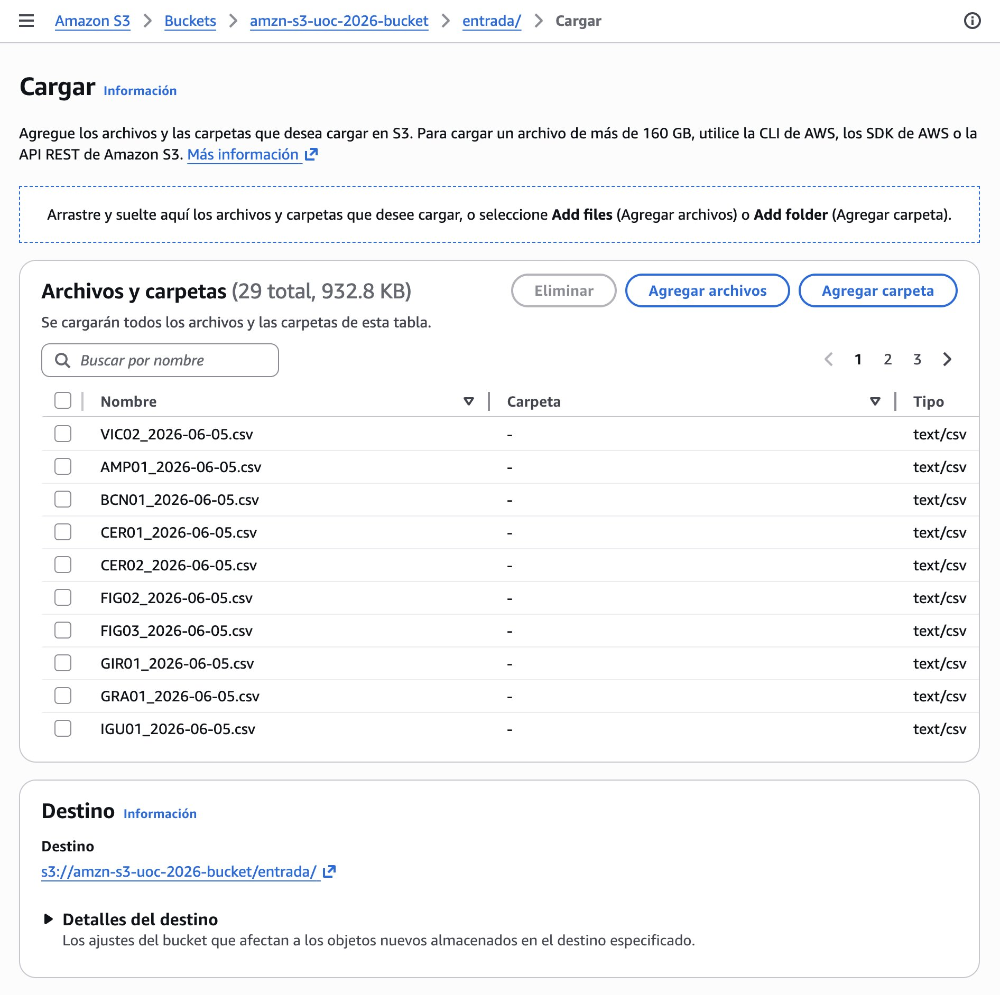
Figura 4.1. Pujar els fitxers CSV a la carpeta `entrada` de S3.
En la següent captura de pantalla es pot veure que s'ha completat la pujada dels fitxers CSV a S3:
Figura 4.2. Pujar els fitxers CSV a la carpeta `entrada` de S3.
En les següents captures de pantalla es pot veure la carpeta entrada està
buida després de processar els fitxers, i els fitxers CSV s'han mogut a les carpetes
validat/ o error/ segons el resultat de la validació:
Figura 4.3. Carpeta `entrada` buida.
Figura 4.4. Carpeta `validat/` buida.
La carpeta validat/ està buida perquè els fitxers CSV que han passat la
validació s'han processat i carregat a RDS, i després s'han mogut a la carpeta
processat/:
Figura 4.5. Resultat del processament dels fitxers CSV a S3.
En la pestanya de monitorització de funció Lambda de validació es pot veure que s'ha executat correctament, amb una durada mitjana d'uns 300 ms:
Figura 4.6. Monitorització de la funció Lambda de validació.
Si accedim a CloudWatch, podem veure els registres generats per la funció Lambda de validació, que mostren el procés de validació i el resultat de cada fitxer CSV:
Figura 4.7. Logs de la funció Lambda de validació a CloudWatch.
En la pestanya de monitorització de la funció Lambda de processament es pot veure que s'ha executat correctament, amb una durada mitjana d'uns 3.5s i amb un pic màxim d'uns 6s:
Figura 4.8. Monitorització de la funció Lambda de processament.
Si accedim a CloudWatch, podem veure els registres generats per la funció Lambda de processament, que mostren el procés de càrrega a RDS i el resultat de cada fitxer CSV:
Figura 4.9. Logs de la funció Lambda de processament a CloudWatch.
Si mirem la cua de SQS, podem veure que s'han processat tots els missatges:
Figura 4.10. Monitorització de la cua de SQS.
En la següent captura de pantalla es pot veure com s'han carregat les dades a RDS, i es poden executar consultes SQL per a validar que les dades s'han carregat correctament des de la instància EC2:
Figura 4.11. Consulta SQL a RDS des de la instància EC2.
Rúbrica d'Avaluació per a Incorporació de scripts o codi rellevant, cada apartat val 0,5 punts¶
| Ítem | Excel·lent (4) | Bo (3) | Satisfactori (2) | Necessita Millora (1) |
|---|---|---|---|---|
| Selecció dels Scripts Rellevants | Els scripts seleccionats són essencials i prioritzen l'impacte directe en els objectius del projecte. | Els scripts seleccionats són rellevants però podrien incloure més components clau. | La selecció de scripts és bàsica i inclou alguns components clau però omet altres importants. | La selecció de scripts és inadequada i no inclou els components essencials. |
| Descripció dels Scripts | La descripció del propòsit, funcionament i dependències és molt clara i detallada. | La descripció és clara però pot faltar algun detall menor. | La descripció és acceptable però manquen detalls importants per a la comprensió completa. | La descripció és confusa o inadequada, amb molts detalls importants omesos. |
| Exemples de Codi | Els exemples de codi inclouen fragments ben comentats i casos d'ús pràctics i rellevants. | Els exemples de codi són bons però podrien incloure més comentaris o casos d'ús. | Els exemples de codi són acceptables però amb comentaris o casos d'ús insuficients. | Els exemples de codi són inadequats, amb comentaris o casos d'ús mínims o inexistents. |
| Documentació | Les guies són detallades i proporcionen solucions a errors comuns de manera clara i efectiva. | Les guies són bones però podrien ser més detallades o incloure més solucions. | Les guies són acceptables però amb informació insuficient sobre la implementació i resolució de problemes. | Les guies són inadequades i no proporcionen informació útil per a la implementació. |
| Revisió i Validació | Les proves de funcionalitat són completes i el feedback és recollit i implementat per millorar el codi. | Les proves de funcionalitat són bones però podrien ser més completes. | Les proves de funcionalitat són acceptables però amb mancances en alguns aspectes. | Les proves de funcionalitat són inadequades i no es recull ni implementa feedback. |